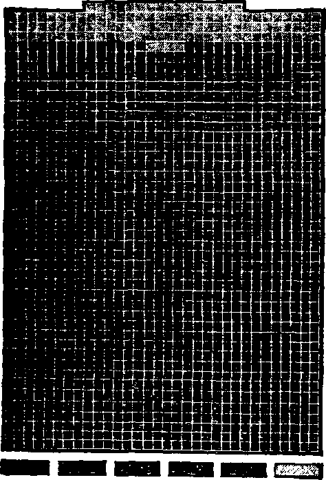

A - JOUR.NAL OF- FACT
H O P E - AN D' CO N VI CT 1 O H
Oct 27, 1920, Vol. 2, No. 29
Published every other Ii7!l week at 35 Myrtle A renue, \j]P nrrjoklyn. Xeir 1'orA- City
T«a Cent* a Copy—12.00 a Year
Canada and Foreign Countries. $2.50
Volume 3 WEDNESDAY, OCTOBER 27. ISO® Number
CONTENTS oT the GOLDEN AGE
SOCIAL AMD EDUCATIONAL Journalistic Truth Expiring 35 The Aseoeiared 1'rtw
SutMerrienee « Adrerriserw 37 In the .Crip nt Mammon
Oppoeed to All RdKrniHb• -Api Jlmnkato the ^priw®«H A.-wawla* of An Reformara.lS - Neva--------1——u.-.Sl.
LABOR AND ECONOMICS Acbieres’to of Union Labor 42 Paupen at the rlalAh
. POLITICAL—DOMESTIC AND FOREIGN Expense^ at U. 8. Gov’t...... 43 Eaxland and Ireland A<aJn44
Courts Under Hr®________43 Scotchman Takes Hand Too 44
FINANCE—COMMERCE—TRANSPORTATION Mora About Inmrarrce..........45 Current Insurance Startxrlca 44
Other Insurance Item________45 Who Framed the Lie’..
. SCIENCE AND INTENTION Molecules, Atomx, Electrons 47 Sugar From Sawdust______
AGRICULTURE AND HUSBANDRY Uses of Dynamite——_____48 An Outdoor Refrigerator 32
HOUSEWIFERY AND HYGIENE Birth of Saxleno Children ....30 Caurra at Small Families
BontituHen Dtacerued Early.,54
TRAVEL AND MISCELLANY -engineers for Palestine.......52 Color and Teniperament.. ... 53
RELIGION .AND PHILOSOPHY Juvenile Bible Study.......... ......
Advanced Studies in the Divine Plan of the *
Rreocnlaeo the Silver Trumpet............................_...
▼olUMlI
New York. Wednesday, October 27, 1920
Journalistic Truth Expiring
The Golden Age does not make a practice of reviewing books, but “The Brass Check, a Study of American Journalism,” by Upton Sinclair, Pasadena, California, contains facts that should be widely known.1
We submitted this review to Mr. Sinclair for preliminary examination, and he wrote us as follows:
“I have your very friendly letter and I certainly appreciate your taking the trouble to send me the review. If I might make a suggestion it would be this: that you introduce a preliminary paragraph quoting from the introduction of ‘The Brass Check1, and explaining my attitude toward my personal experiences with newspapers; that is, I tell about these experiences because they are cases I happen to know beyond dispute; I am offering evidence as if before a jury. Otherwise, you see. the reader will think my book is just a ventilation of my personal grouch, and he may be so repelled at the beginning that he will not read the rest of the review.”
Without referring back to
the preface of “The Brass Check” we now give the review’ just as we prepared it:
From his own personal experiences Sinclair first shows how a New York American reporter stole his first wife’s picture (a feat subsequently duplicated in the theft of a group picture by a Philadelphia reporter) and how the American and its allied papers still use the stolen picture to represent his present companion.
He goes on to show how Collier’s got the first opportunity to publish the expose of the condemned meat industry (which subsequently made Sinclair famous),'but preferred the revenues which flowed to it from advertisements of the packing-house products. '
“TT7TTH the invention of news-v V papersand since journalism has attained full bloom, the good spirit of the people has been forced to retire altogether from public life. For now only opinion rules, and indeed public opinion; it is to be had for money;... whoever takes a newspaper has procured not only the waste paper, but also its opinions; he no longer needs to think or to reflect; what he is to believe of God is already thought out for him in black and white.” '
' —Richard Wagner in his ''Essay on Beethoven”.
How the editor of the Chicago Tribune ostensibly wrote a reply Co that expose, denying its truthfulness, but it was subsequently revealed that the editor’s criticisms were prepared for him by the publicity agent of the-packers themselves.
How the New York Evening Past denounced the charges against the packers as false, but when confronted with the query as to the respects in which they were false was unable to answer, and has never corrected the false impression it conveyed to its readers.
How when Roosevelt had been induced to investigate the packers, the Chicago Tribune made it appear to its readers that he was really investigating Sinclair with a dew to denouncing him.
How that when the report, justifying all the charges against the packers, was ready, the Associated Press refused to have anything to do with it: how it filially got to the world through Sinclair’s persuading the New York Times to publish it. and they, though they made a fortune out of it, never paid him anything for the news.
How, with other writers and teachers, men and women of the highest moral character, he organized sr cooperative home known as Helicon Hall; bnt, because he is a reformer, the New York Sun. New York World, and New York
Journal made it a constant batt of ridicule, writing of it in such a jesting manner as to convey the Impression that it was an immoral place.
How the principal press agencies of'America telegraphed to all' the world a lie which had 'appeared in the Morning Telegraph to the effect that he had hired out as a servant and listened at a keyhole on board the private yacht of an . American millionaire, but that when this was indignantly denied, not a line of correction was sent ou?t. ■ ■ -
How’, when he wrote a polite note to the management of his hotel in San Francisco calling attention to an overcharge, the San Francisco Examiner published a falsehood that he had refftsed to pay his bill and had raised a disturbance in the dining room, which lie was sent out as news to all the world; how that the same paper, two or three days later, falsely accused him of having said he was sorry he was married; and this lie, also, was heralded around the world and never corrected.
How when his first wife left him with another man, and he was reluctantly pressed by a reporter into admitting that he was preparing to bring suit, the New York American published : a full page, malicious, lying burlesque purport-| ing to explain "Why Hungry Mrs. Upton Sinclair Went Home to Mamma”; how that for several years this one lie completely destroyed his earning power as an author.
How that when sued for thirty-eight dollars worth of fertilizer which he had never purchased or received, and for which no bill was rendered until four years after the alleged purchase, the New York Wo rid, which had sought an interview regarding it, so stated the matter as to make it appear that he had himself brought it to the World's attention with a view to securing notoriety.
How when he visited the striking silk-workers at Paterson, to urge that they endeavor to use the ballot to secure a better government, the New York Tinies falsely represented him as having encouraged the strikers to attack the police forcibly.
How that when he had made an ironclad agreement with the managing editor of the New York Evening Journal for the sum of three . hundred dollars to he paid for a conununication " from an unfortunate woman that the Journal was trying in vain to locate, and the Journal had published the gist of the story which it had covenanted its honor not to publish under any consideration, unless it paid the three hundred dollars to the destitute and distracted woman, whom it was at that particular time engaged in persecuting, it subsequently went to unbelievable lengths to evade payment of the money, even going so far as to send false wireless messages, with Sinclairs name signed to them, to two persons that it hoped might be able to locate the poor woman. Moreover, it never paid the three hundred dollars. '
How* the Associated Press sent out a false . statement that his wife had been arrested in New York; resulting in her disinheritance, and nearly causing the death of her mother, and made no correction although their attention was called to the error by a special delivery letter.
How that when a Governor of Colorado had falsely stated to President Wilson that the legislature had arranged for mediation in the coal strike then in-progress in that state, and Sinclair had drawn the attention of the Associated Press to the facts, they failed to carry the news to the rest of the country, and even refused to do it after the facts had been published in one of the Denver papers. . "
How the Denver Post accused him of prevarication when he had told the proven truth about the Governor’s misstatements, and refused him an opportunity to defend himself in their paper by a statement of the facts. .
How the New York Evening Post, its attention having been called to the suppression of this news by the Associated Press, promised to have the matter investigated, but was never able to do anything about it, for the good and sufficient reason that the Associated Press can strangle any newspaper to death over night by the simple act of shutting off its news.
How a representative of the Denver Post undertook, respecting Sinclair, the regul'ar, established policy of Denver papers, which is to blacken the moral reputation of those it wishes to discredit, but backed out of the programme when told in advance by Sinclair that he knew just the game they had in mind.
How the Los Angeles Tinies published such a perverted and unjust account of a dignified and thoughtful address by Sinclair before one of the clubs of that city, that when he spoke before the club again on the succeeding week, the
I; •- ■
members rose from their seats in an ovation, as a mark of protest against the injustice that had been done him.
LAYING’ a foundation in these, his personal experiences, Sinclair proceeds to show some of the reasons why the press is in the condition in which ail thoughtful and experienced persons know it to be. One of these reasons is the fear to do anything that would interrupt the revenue which comes from advertising. Only one-third the receipts of a paper come from its subscribers. The other two-thirds come from the advertisers and if the advertisers withdraw their patronage the paper dies.
£ A great amount of the advertising comes from department stores; and nothing unfavorable to these stores ever appears in the local papers. If the stores are closed temporarily and the owners fined for profiteering, the matter does not get into the papers. "When the girls go on strike to better their condition, the papers say nothing, as a matter of course. When a Woman was killed by falling down the elevator shaft of a New York department store, not a paper in the city mentioned the name of the store. When shoplifters are arrested the name of the store is never given.
When an underpaid worker in a New York department store committed suicide, leaving a note to the effect that she could no longer stand twenty-cent dinners, the New York World issued a solemn preachment respecting “some people who make too large demand upon fortune” and [who “measure their requirements by their desires”. .
During the war those patriotic papers, the Boston Herald and Journal and the Boston Post, rejected paid advertisements containing quotations from President Wilson’s speech urging the people to purchase only necessities. Such advertisements would have been offensive to department stores carrying large quantities of advertising with them regularly.
gpWhen one of the Gimbel brothers was ar-flrested in Philadelphia, charged with a vile berime, and cut his throat, not a Philadelphia .'paper mentioned the news, ami when papers pfrom out of town containing the news were Coffered for sale on the Philadelphia streets, the ^police stopped their sale, took away the papers, ?and the Philadelphia papers were silent.
When the vice-president of Gimbel Brother Milwaukee, was indicted for bribing an aide! man, and burned all the evidence before he c be arrested, the Milwaukee papers said nothin of it.
When Wanamaker was detected in custon® violation, only one Philadelphia paper repo the matter. When a New York merchant w convicted for selling furs under false names, riftS mention was made of it. When several Chieagd firms misbranded goods, the papers kept-st about it. When four Milwaukee firms-sol potted cheese doped with chemicals, their name: were withheld.
One of the world’s most prominent edifpS wrote an article (leploring the use of packag^ cereals and the advertising department object that it would cost the paper a hundred thousan dollars a year; when he wrote that stiff hats cause baldness they objected again on behalf of the hat dealers; when he urged the use of square toed shoes he was obliged to throw the article into the waste basket because it would offend th<S shoe dealers; when he wrote an editorial siip^S porting a municipal subway it was objected thara it would not Be .satisfactory to Wanamaker’s.
Criticisms of indecent plays were forced oura of the New York Tribune and the New York Nutw because they offended advertisers of those! plays. But when Arthur Brisbane wrote double column editorial praising a play, the^ Evening Journal, two or three days later,| carried a full-page advertisement of that play.* It works both ways with the paper. If it| offends the advertiser, it loses; if it praises himJ it is rewarded. v affi'
When Everybody’s Magazine published Si^ clair’s “Condemned Meat Industry” it lost manyS pages of advertisements of hams, lard, fertilize ers, soaps and railways. It never forgot this; loss and is unwilling to make any further, emr? tributions of this nature to the public welfare.
THE newspapers seldom champion a reforrir until a hoodwinked and outraged people,1 kick over the traces and threaten to- smash1 everything in sight. Their voice is at all times; lifted in support and defense of things as they; are, instead of things as they ought to be. -^-£4 The Seamen’s Law, one of the most construcw ive pieces of legislation ever enacted in -this!
■ 'Y- di
country, was fought for years by the greatest . newspapers of the land because they were receiving two million dollars a year for shipping advertisements.
- . A bill; was up before Congress in 1919 for government regulation of the packing industry, in the hope that the result might be that in the United States we could have our meat prepared in places clean and sweet and free from odors. : To defeat this bill Swift and Company alone
spent a million dollars a month upon newspaper 9 advertising, effectually closing the channel by 3 which the people should have known the truth.
- A cooperative department store was projected J in Chicago. It would have been a great boon to the people of that city and to all who trade there; but the newspapers and. department ■J stores threw their combined publicity and finan; cial strength against the project and killed it
। The people of Kansas City agitated for
| cheaper meat and the papers took up their fight,
but in a short time packinghouse advertisements appeared iq all the papers and there was no more news about the price of meat for a long interval. -
- The people of Boston sought a lower price j , for gas. Louis Brandeis, now Justice of the
I •. Supreme Court, made an argument in their
\ behalf. The result, as far as the .people were ! concerned, was that the newspapers of the city printed full page advertisements of the gas company, paid for at a dollar a line.
When the New Haven railroad mess began to . smell to heaven, the pious Outlook rushed to their defense, under the inspiration of matter which the New Haven people supplied, and it developed later that the New Haven was paying out four hundred thousand dollars a year for just such purposes.
When, in 1914, the railroad presidents were asking for increased rates, as they are always doing, and when Mr. Thome, State Railroad Commissioner of Iowa, had shown before the Interstate Commerce Commission that in twelve years the capitalization of the railroads had increased ninety-two percent, and their dividends had increased three hundred and fifty-nine percent, and their costs had been padded out of all semblance to the facts, and the railroad presidents had been unable to answer his 7 questions and his charges, the New York World, New York Times, Philadelphia Public Ledger, ■ Baltimore Sun, Cincinnati Enquirer, and Chi
cago Herald found plenty of room for the statements of the railroad presidents, but did not mention in any way the Thome incident which was the pivotal' item of news of the whole occurrence. -
WHAT the newspapers do to the reforms, they do, as a matter of course, to the spokesmen of reforms. A favorite custom is to destroy their influence by using the pictures of other people, objectionable in appearance, to represent them. Thus the Los Angeles Times used the photograph of Abram Krylenko, a scraggly-looking Russian, to 'represent Robert Smillie, a prominent English labor leader. .
When Robert La Follette, one of the greatest statesmen in America, carried Wisconsin by a vote of 110,064 to 70,813, the principal'newspapers of the country reported that he had been overwhelmingly defeated, and have never corrected the error. This is because La Follette devoted a part of his time and energy to show- . ing up the corruption of the press.
When Gorky visited this country he made the mistake ef signing with the New York Journal, a contract for his writings which was desired by the New York World, whereat the latter paper ruined his life and his cause by misrepresenting him as having brought his mistress with him as his wife.
But when C. W. Post, of Postum fame, a great advertiser, decided to divorce his wife and marry his stenographer, hardly a newspaper in the country mentioned the matter in any way.
When Senator Lodge lost his temper and struck Bannwart, a Boston pacificist in the face, the Boston papers printed columns to the effeet-7-that Senator T-odge had been assaulted in his office by a pacifist, and they lauded him as a hero; but after two years Lodge admitted in writing that he struck the first blow.
The Chicago Tribune brought charges against another prominent pacificist, Henry Ford, that • guardsmen employed by him would lose their places and no provision be made for their dependents. But at the trial it was proven that all the Ford workers who were drafted to Mexico had their wages paid to their families while they were away, but that when two hundred and sixty-eight employes of the Chicago Tribune itself were drafted to the World War their pay had been stopped. ’
The Kansas City Star falsely accused Rose Pastor Stokes of having stolen out of Springfield at daybreak, forfeiting the hundred dollar bond of a friend, and as a direct result of this misrepresentation she was arrested by the federal authorities, tried and sentenced to ten years-in prison.
When Jack London quoted a Colorado militia “general”, one Sherman Bell, as having said, “To hell, then, with the Constitution”, the news .went broadcast all over the country that London himself had made the remark, and down went his royalties and out went his books from the public libraries.
When the New York Times came out with an editorial denouncing the socialists for their May-day “violence” in getting their heads broken by the police, and praising the police for their heroism in attacking them, the police commissioner of New York followed with a formal statement in which he denounced the police as having acted contrary to his orders.
' When James H. Maurer, president of the Pennsylvania Federation of Labor, quoted the State Police as haying said, “Down with the stars and stripes” (which comrades were using in the burial of a striker who had been a veteran in the Spanish-American war) word went out all over the United States that it was Maurer’s own remark, and the expression is still used against him. As a matter of fact the reporters who related this against Maurer were all out getting a drink at the time Maurer delivered the address in which the expression occurred. An interesting side item is that when the novelist, Richard Harding Davis, saw*‘this untruthful report in the New York Times, he became so enraged at Maurer that it brought on- a fit of apoplexy and caused his death.
SINCLAIR supplies data to show that the fifteen directors of the Associated Press are connected with huge financial undertakings and that the policy of the Association is to give scant courtesy to movements for constructive legislation in the public interest, to belittle municipal ownership and to keep silence on the successes and to give publicity to the defeats of reformers. Much of the strike news is sent out in the form of propaganda .which has for its, purpose the breaking of the strike rather than the telling of the facts.
When the Associated Press was being investigated by the United States Senate the senators who were conducting the investigation observed that it reported nothing of the adverse • evidence, but only that which was in ita favor. . What confidence can we place in any institution -that possesses this kind of “moral courage’’? Some items involving the Associated Press have , already appeared in this article aud other items follow:
When Debs was sent to prison word was sent out that he had given an interview to* the effect that he would call a general strike. Debs gave no such interview, but his denial has never been given publicity. J
The Associated Press sent out a report that Gaylord Wilshire, had spoken in York, Peimsyl- 3 vania, that in his- speech he had denounced the courts, and that he had" been mobbod by the T citizens. As a matter o.f fact the train connections on "the date he was to have spoken in Yuri: A were broken and he was unable to reach the city at all, but at the hour he was supposed to speak there he was in New England, on his way ■ to Maine.
The Associated Press sent out a dispatch from Centralia, Washington, narrating how L W. W. members had fired from their windows upon an Armistice Day parade of returned soldier boys. Not till long afterward did the truth come to light that the former soldier boys attacked the I. W. W. hall before any shots were fired, and « were battering in the door when the first shots were fired through it.
The Associated Press carried a story from West Virginia as though striking miners had fired upon a passenger train. As a matter of fact <
the train was a special train organized for the 1 express purpose of shooting at the. strikers. It was made up at Charleston and returned to Charleston after it had passed through Holly 5 Grove and fired a gatling gun at the tents in which the miners were living. Robert Estep. ? one of the miners, was killed in this premeditated murder, which began the shooting.
The Her.aldo de Mexico, the Mexican North- s western Railroad, and the former Mexican correspondent of the New York Tribune, have accused the Associated Press of lying with frequency about conditions in Mexico, and those who have read our recent article on “Getting a? the Bottom of Mexico’s Troubles” can well believe the truth of their charges.
■* * ■ —--■■■■ ___________________________ ____________~_____________
When William C. Bullitt, President Wilson's special commissioner to Russia, submitted to the Senate Committee his report, previously-made to the President, that there was order in Russia, that the Russian people were satisfied with the Soviet regime, that the nationalization of women in Russia was an absurd yarn, that the cause of starvation and misery in^ Russia was the allied blockade, and that Lenine' wanted peace and was willing to do almost anything to ■ get it, the Associated Press; although this was one of the most important items of news in a generation, did not lay it before the American people, and did not even give Bullitt’s verbal testimony except in a fragmentary and unsatisfactory manner.
In sixteen years the dividends of the Calumet and Hecla Company, operating on the Northern Peninsula of Michigan, have never been less than eighty percent annually and sometimes have been as high as four hundred percent. The miners, ill paid, ill treated and badly housed went on strike and the usual gang of thugs and gunmen was provided to preserve “order”.
While.a Labor Day procession was being held at Kearsarge in that district, a hand of these gunmen, without excuse and without occa-• sion, attacked the procession and broke it up, firing about one hundred shots. Margaret Fazekes, not the daughter of a striker, not connected with the strike in any way, was walking along the sidewalk and was killed by’ a bullet from a gunman's revolver, This is the way that the Associated Press reported the matter, but one of scores of similar knavish falsehoods, as was afterward brought out in the Congressional investigation: .
“Calumet. Mich., Sept. 1.—The copper strike situation took a serious aspect today- as a result of the fatal shooting of Margaret Faxakas. aged 15, daughter of a striker, at the North Kearsarge mine, when a picket of strikers and women clashed with deputy sheriffs guarding a mine.”
In the Grip, of Mammon
INCLAIR gives a list of papers and districts that are owned by the copper interests, coal
interests, milling interests, lumber’ interests, railroad interests, etc., that is too heart-rending to a lover of truth even to copy; but in it are the names of most of the great papers of the country, and he tells you some things about these and other papers that make your heart almost stop locating.
The average country editor is an entirely ignorant man, heavily obligated to the financial power of his community, and does not dare to print the truth about labor conditions in his own town for fear of loss of advertising or bank accommodations. Most of his general reading matter is sent to him almost free, already set up in type, and in this “boiler plate”, as it is called, is the hidden poison of the country’s greatest grafters. The city papers are handled individually.
When Collier’s denounced the Ballinger land frauds, the National Association of Manufacturers boycotted the magazine, the banks called its loans and took over its control, the .owner died, and the magazine, at his death, did not dare to mention the greatest service he ever performed in his life—that of the uncovering of those frauds.
When the Indianapolis Sun told how the street - car companies of Indianapolis had boosted the capital stock from three million dollars to fifty-seven million dollars, and how they were having union leaders slugged for helping the workers to organize, the Merchants Association warned Sun advertisers of a boycott, and the paper was ruined.
The Chicage Tribune and Chicago Daily Vejrs hold leases on property which rightfully lielongs to the school children of Chicago. For this they pay next to nothing, but it is impossible to recover the property for the school children, because these papers immediately attack and ruin the reputation of any man or men who try to right the wrong.
The St. Paul Dispatch and Pioneer Press, put on their feet by a street-car magnate, and paying taxes on less than fifty-seven thousanddollars for a million dollar property, support this street-car magnate in every tax-dodge, every graft, every strike. They have charged illegal prices for city advertisements, suppressed news of public interest against packers and millers, lied systematically about the farmers’ movements, and refused to publish corrections even in the form of paid advertisements; Like the Chicago Tribune, they urged all employers to continue employes’ wages while in the army, though they themselves failed to do so. .
Because Judge Lindsey, candidate for governor. would not agree to the plans made for. him by the Sneer corporation, the Denver Post
I ' ■ * __
published false news dispatches respecting him, ' ruining his candidacy and almost causing his 6 expulsion from the state. -
. ’ When the Denver Express published the truth
about the Colorado coal strike, mysterious • gangs of thugs beat up the newsboys carrying these papers and scattered their papers, with no interference from the police, and not a line 4 about the matter in any other Denver paper.
• Years ago the San Francisco Bulletin was on the payroll of the Southern Pacific Bailroad . Company for $125 per month jnst for “friend* liness". • This amount was afterward raised to
5 $250 per month, but when the railroad company
wanted to place a certain man in a certain | office the Bulletin held the corporation up for a . flat amount at one time of $7,500. Of course the public paid the bill in the end.
At one time General Otis, owner of the Repub-4 lican "open-shop Los Angeles Times, was also
owner of the Democratic - closed-shop Los Angeles Herald, so says Sinclair: "Here was Otis .handing out one kind of dope to the Lbs Angeles public with one hand, and handing out the opposite kind of dope to the Los Angeles public with the other hand—and taking in money from the Los Angeles public with both hands’*. • - .
Sinclair calls attention to the fact that the Times repeatedlylies in its headlines, which are so phrased as always to place labor at a disad-’ vantage in the eyes of the public. Moreover, inasmuch as Santa Barbara real estate competes with Los Angeles real estate, it happens always that when there is an earthquake in Los Angeles the Times refers to it as an earthquake in Santa Barbara.
There is a paper in San Francisco which never uses the title of “Mr.” in connection with any other person than the owner of the paper, and never mentions at all any prominent reformer, or any person who refuses to advertise in the paper: yet the minds of the American people, their choicest possession, are in the keeping of such unspeakable contemptibility.
On the Chicago Chronicle it was formerly necessary for a writer in its employ to know by heart the names of all the sixteen corporations in which the owner was interested, and - the names of the men he liked or disliked, and to . treat them accordingly. This is a common practice in newspaper offices all- over America. , In some newspaper offices the list of prominent people that are never to be mentioned in the paper is three feet long..
John Swintoh, editor of the New York Tri* bune, is quoted by Sinclair as having answered to the toast, “An Independent Press", as follows: "There is no such thing in America as an -independent press, unless it is in the country towns. You know it and I know it. There is not one of you who dares to write his honest opinion, and if you did you know beforehand that it would never appear in print. I am paid one hundred and fifty dollars a week for keeping my honest opinions out of the. paper I am connected with—others of you-are paid similar salaries for similar things—and any of yon who would be so foolish as to write his honest opinions would he out on the streets looking for another job. The business of the New York journalist "is te destroy .the. truth, to lie outright, to pervert, to vilify, to fawn ai the feet of Mammon, and to sell his race and his country for his-daily bread. You know this and I know it, and what folly is this to he toasting an Independent Press’. We are the tools and vassals of rich men behind the scenes. We are the jumping jacks: they pull the strings and we dance. Our talents, our possibilities and our lives are al! the property of other men. We are intellectual prostitutes. ’ -
We make extracts from sonie of Sinclair’s bitter words of truth that follow—words that shame every person who suppresses or evades or misrepresents the truth: . -
"What u the Brass Check? The Brass Check is found in your pay-envelopes every week—you who write and print'and distribute our newspapers and magazines. The Brass Check is the price of your shame—you who take the fair body of truth and sell it in the marketplace. who lx>tray the virgin hopes of mankind iuto the loathsome brothel of Big Business. The prostitution of the body is a fearful thing; hut what of the mind? Youth cries: ‘Life is beautiful, joyous! Give nie light that I may keep my pathThe answer conics: 'Here is darkness, that you may stumble, and beat your fate, upon the stones!’ Youth criesi ‘Give us Hope’. The answer comes: ‘Here is Cynicism’. Youth cries: ‘Giv.y me understanding, that I.may live in harmony with my fellow-men’. The answer comes:.‘Here are lies about your fellow-men. that you may hate them, that yoii may cheat them, that you may live among them as a wolf among the wolves Y Such is the prostitution of the mind.” •
SINCLAIR proposes laws that no newspaper should print an interview without having' it first approved by the person interviewed: that when a newspaper has had its attention called to a false statement it shall publish a correction in the next edition, in the same spot, and with
the same prominence given to the false statement; that the distribution of news to American newspapers should be made a public utility, available for any one who wishes to pay for it, . and that the faking of telegraph or cable dispatches should be forbidden. He also suggests that workers on newspapers in America should do as in Argentina, refuse to set type, or print, or distribute any item which is manifestly . aimed at the interests'of the workers. This has l;een tried on a small scale in Boston and Seattle, and it worked.
. He also proposes a daily paper, fashioned .-.i rer the principles upon which we have tried to ’ uild The Golden Age, a paper that shall really try to find out the truth on all subjects, and to tell it. We feel satisfied that something of the kind must come soon. The present condition is too intolerable to last.
! We concede that we are living in the time . when the “people perish for lack of knowledge” and when “truth is fallen in the streets”, just as the prophets have declared, but we have confidence that this very condition precedes by but a little the day when "there is nothing covered that shall not be revealed, nor hid that shall not f become known”.
Of the men of wealth and power that are driving civilization on the rocks, and bringing . * ruin upon themselves and millions of others, it
• is very true, as the Psalmist (82:2-5) has declared:
“How long will ye judge unjustly, and accept the persons of the wicked? Defend the poor and fatherless: do justice to the afflicted and needy. Deliver the poor and needy: rid them out of the hand of the wicked. They know not. neither will they understand; they walk on in darkness: all the foundations of the earth [existing order of things] are out of course.” '
THE achievements of Union Labor should not A be passed by without pointingout some of the great things in which they have had a leading part. In 1906 six men holding paid-up trade union cards were elected as members to the national House of Representatives. This was Labor’s debut in the national legislature. In 1914 the group had grown to seventeen members in the House and one member in the Senate, A very incomplete list of the legislation enacted at the suggestion of these men. or with their verv active support and cooperation is as follows:
Limiting railroad men’s hours of labor to sixteen in any one day; employers' liability; District of Columbia child labor; self-emptying ashpans on locomotives; Bureau of Mines establishment; requiring railroads to report all accidents; standard equipment of railroads; federal locomotive boiler inspection; white slave act; eight hour naval laws; amendment to Constitution providing for income tax; publicity of campaign contributions; eight hour postal laws; Children’s Bureau establishment; anti-phosphorus match bill; physical valuation of railroads and express, companies; parcel post; seamen’s law; Shipping Board; Department of Labor establishment.
A CORRESPONDENT sends us some little blue slips which the Government is distributing for the sale of saving’s certificates, calling attention to the fact that whereas one hundred men at the age of twenty-five years are self supporting, with good prospects, forty years later out of the same one hundred men fifty-four are in the poor-house or -totally dependent on others’ charity, thirty-six are dead, six are still working for a living, three are well-to-do and one is rich. Our correspondent says: “This, it seems to me, is self-explanatory of the present ability of men to form a perfect government. If the best government on earth, which we have, can offer real success to only 1- in 100, and if 54 out of that 100 become objects of charity, it looks to me as if the world needed the Kingdom of Christ much more than men realize.”
The most curious thing about the foregoing is the fact that the one man who is rich and the three well-to-do so manipulate public opinion as to persuade the six who are still working and the fifty-four who are in the poor-house, a« they previously persuaded the thirty-six who are worked to death, that it is absolutely impossible to improve upon the plan by which they, the on« rich and the three well-to-do, have absorbed all of the good things of life. If the fifty-four wh<» are in the poor-house or the six who are s^ll working for a living attempt to negotiate e”v close inquiry as to how the one r’ch and the three well-to-do obtained din <jood things of life, they ar" looked u.non fit subjects for S:b»ria or Guam. M’bon the Lord establishes His long-nronv'od Gol-’en Age pH ■this ”•’]! he changed. All the promised signs show that it is at the door.
ExptMH of U. S* Goctrnnuni
|
1789-1792, George Washington---- 1793-1796, George Washington____ |
__$12,939,006.45 ___ 35,634,546.78 |
|
• 1797-1800, John Adams----: |
____ 40,306,313.88 |
1801-1804, Thomas Jefferson-------2___ 49,433,001.64
1805-1808, Thomas .Jefferson---------- 56,854,095.57
1809-1812, James Madison----____ 63,068,143.10
t 18134816, James Madison (War)—----166,045,739.54
1817-1820, James Monroe----------121,749,746.02
1821-1824, James Monroe.—------------ 83,979,874.79
, 1825-1828, John Quincy Adams_________ 95,805,446.74
1829-1832, Andrew Jackson__:_______114,024,784.13
1833-1836, Andrew Jackson 97,300,586.53 1937-1840, Martin Van Buren____i_____137,544,127.83
1841.-1844. William Henry Harrison____110,722,063.23
f 1845-1848, James K. Polk___________175,691,666.07
f - 1849-1852. Zachary Taylor 195,352,324.02 . 1853-1856, Franklin Pierce___________268,822,809.53
1857-1860, James Buchanan—__:____314,088,525.88
F 1861-1864, Abraham Lincoln (War)____2,416,451,253.23
1865-1868, Abraham Lincoln (War)—3,762,816,304.37 1869-1872, Ulysses S. Grant—2,399,245,081.76
.' 187.3-1876, Ulysses S. Grant_______1,675,464,506.91
1877-1880, Rutherford B. Hayes____1,080,797,937.00
1881-1884, James A. Garfield_____—1,468,074,009.00
. 1885-1888, Grover Cleveland—__1,435,244,687.00
I 1889-1892, Benjamin Harrison.________1,696,772,170.00
1893-1896. Grover Cleveland______1,925,534,849.00
- , 1897-1900, William McKinley (War)—2,458,842,334.00
• 1901-1904, William McKinley 2,695,626,140.00
f 1905-1908. Theodore Roosevelt_____—3,124,818,977.00
1909-1912, William H. Taft 3,654,951,948.00
1913-1916, Woodrow Wilson___;__- .4,100,142,246.23
> Expenses for 128 years—-.---------$36,034,145,335.23
• 1917-1920, Woodrow Wilson(War) 54,850,167,473.58
I Total Expenses for 132 years___$90,884,312,808.81
* Courts Under Fire
IN JULY the Canadian Government sent a judge two thousand miles by steamer from ’ Ottawa to Hudson Bay to try an Indian who murdered a fellow man to gain his wife. The I object of this long and difficult trip was to , impress upon the native mind a reverence for the law. This is using the power of the law in a proper manner.
* ’ What a pity it is that, while wise men are
trying to uphold the law and make it respectable in the great country to the north of us, America should have such a case on its books as that of 1 ,. the innocent labor leader Tom Mooney, proven ' by dictaphones in the office of District Attorney Fickert, of San Francisco, to be the object of ( one of the most sickening conspiracies of repre
sentatives of the law ever known in history. At last accounts Mooney was still in prison, despite the fact that a snapshot of him showed him a mile away from the crime laid at his door at the -time the crime occurred. • । ;
Neither Great Britain, nor Germany in her palmiest days, ever had such a riot of government by injunction as has been witnessed in the United States within the past year, but the curious thing about these injunctions is that so many of them seem to work against the miners and other workers but in. favor of the profiteers..
- Thus in Pueblo, April fourteenth, the United States Circuit Court issued an injunction against the District-Attorney,' enjoining him from presenting evidence of profiteering collected against thirteen Denver merchants and . three coal companies. This injunction completely broke the spirit of all the men in that section of the country who were trying to insure fair prices for the people. ..
Commenting upon the present condition of the judiciary "in this country Chief Justice Morris A. Soper, of the Supreme Bench of Baltimore City, said at Atlantic City, June 24:
‘•The courts are under fire. They are justly under fire because for a century, during which: we have paseed from a primitive frontier society to a complex industrial civilization, the instruments for administering justice have remained substantially as they were when first projected. No institution can hold up its head under these conditions, and no body of men can secure respect for an instrument of government so far out of date.” -
Of course the difficulties with reference to the courts are largely those of the legal profession. The American Judicature Society, of Chicago, a body of clean, high-minded men who are anxious to raise the standard of things jndicntU and legal in the United States, is authority for the statement in its Journal of date June, 1920, that •■’more or less legislation will not clean up a profession which has got lousy. There must be a regeneration of both court and bar.”
Our two latest presidents have expressed themselves in the following language respecting the need of improvements in judicial matters in the United States:
"One great crying need in the United States is cheapening the cost of litigation by simplifying procedure and expediting final judgment. Under present conditions the poor man is at a woeful disadvantage in a legal contest with the corporation or tc rich opponent. The^ necessity for reform exists noth in the United States and in all the state courts.”—WtHiam H. Taft.
‘•I do know that the United States, in its judicial procedure, is many decades behind every civilized government in the world; and I say that it is an immediate and an imperative call upon us to rectify that, because the speediness, of justice, the inexpensiveness of justice, the ready access of justice, is the greater part of justice itself.”—Woodrow Wilson.
England and Ireland Again By c. 1. Bobton Mb. Editor: A paragraph in The Golden
Age, written by Robert Whittaker from an intensely vitriolic standpoint, condemns English rule in Ireland as the cause of all the unhappy conditions existing in that distressful country.
Mr. Whittaker may be familiar with English history—as he has taken care to mention in his letter to you—but it is painfully evident that his knowledge of Irish history is a limited quantity. What he seems to know regarding Irish history is based upon what he saw while making a hurried visit to Belfast. And surely he will be honest enough to admit that social conditions, be they what they may, afe no evidence of misgovernment; but rather the result of tarrying too long at the wine cup, and similar causes.
Every reformer and Christian worker, is painfully familiar with facts such as your correspondent has pointed out, and, unfortunately, we have not to travel quite so far as Belfast to find a parallel for what he has written.
I am Irish, lived thirty-five years under feritish rule and have not a fault to find. Nor can I refer to any act of seeming injustice practised by that government.
. I am aware; however, that the Roman Catholic church in Ireland has for centuries endeavored to nullify and make British rule impossible; that the church of the majority has impeded the British government in its efforts to make new laws for the betterment of the people educationally, and otherwise.
The result of Romish disloyalty has been the enactment of laws which were intended as a curb upon that cult, and also to provide an antidote to the vaporings of the church, and for which England has been in no way to blame.
No coercion act has ever been enacted to compel the Protestant inhabitants to observe the law. They are loyal and true to everything • that makes for law and order.
Now Mr. Whittaker might wish to know my authority for entering this controversy. I beg to inform him that I have spent ten years of my life (my best years) working for the uplift of the Irish people. I am a diligent student- of Irish history, the author of three volumes on that subject, and a member of all her principal Historic Societies, North and South.
I will conclude this note by stating as strongly as I know how that the statements of Mr. Whittaker are a gross libel on the British government and I am surprised that they should be permitted to appear in a paper like The Golden-Age, professing, as it does, a character for truth and righteousness.
By Bdward B. Taylor
Mr. Editor: I wish to reply to an article I observed in your valuable paper regarding conditions in Ireland by an Englishman who must have studied his family history much deeper than he did the cause for the condition of affairs in Ireland.
He is like a good many more who saw the poverty as they passed through Ireland from place to place and put the blame on the British Government and the British people, without finding out more about it.
If he had found out about the taxation which the government takes and the fees that the Roman Catholic church exacts from the poor people I think he would change his opinion-about how the British Government serves the Irish people.
I am a Scotchman, born and bred. I have never lived in Ireland but I have had many pleasant trips through it, and, as Mr. Whittaker writes, there are poor in the North of Ireland, but I think that had he investigated he would have found the large majority of the poor were Roman Catholics: and in .cases where Protestants were poor, rum was the root of the evil.
There are thousands of Irish in Scotland and England who come over and never seem to be able to come up to the same standard of living as their fellow-citizens do, and yet they get the same chance under the same government.
This question of home rule and an Irish republic is not a political one, but a purely religious one; and Ireland is an example of what would happen if we were ever to come under such a dominating rule as the Church of Rome.
Mr. Editor: I wish to call your attention to a very erroneous and misleading article ' entitled? "Insurance Business Profitable," appearing in your issue of J une 23, page 598. The writer .is evidently ignorant of insurance «• practice and policies or he would never have written such an article.
He gives the impression to his readers that £ the $22,641,383 is clear profit for the insurance companies. He makes no mention of the expenses of operating the companies, or of the amounts paid out on matured endowments, * of the amounts paid as cash values on policies cancelled before maturity, or of the amounts added to the reserve to provide for future pay* ments on such policies.
Every company must lay by in the reserve out of premiums received the amount required to produce the face of the policy at maturity, if an endowment. or at the expectancy of life, if a life contract. For instance, on a Twenty Year Endowment Policy, at age 35, the company must each year put in the reserve $34.17 out of a premium of $42.00, and in like proportion for any other kind of-policy.
’ The cash value of the policy increases each : year by about the amount added to the reserve
and interest, so that if the insured wishes to discontinue at any time, after the third year, this money must'be paid by the company upon request of the insured. •
Carrying the illustration further, the insured pays in twenty years, if he is so fortunate as to 2 live that long, twenty times $42, or $840, and the company must pay $1,000 at death or maturity. ' The statement of ‘'elderly friend” is untrue J and unfair for the reasons given aliove. When all the persons now holding policies in the state of Michigan shall have received the proceeds of 1 rheir policies by death or maturity, they will have received more than was paid by them. Ou • very few policies do the companies pay less than ' was received bv them, and then onlv on life contracts where the insured lives far beyond the expectation of life.
Briefly, then, of the amounts received by the ’ insurance companies. almut three-fifths are paid ‘ out as claims, endowments, cancellations, etc., and about one-fifth is used for the* expenses of , the business, and the remaining one-fifth is added to the reserve to be paid to the policyholders when required.
I happen to be in the insurance business myself, and I know whereof I speak on these matters. I do-not consider it good policy on the part of your paper to publish such articles until you have established the correctness of the facts from reliable sources.- I invite you to prove my figures from any reliable source of information on the subject of insurance.
Other Insurance Items
THERE have been insurance companies in the 'world since the days of Demosthenes when, -for the first time, shippers began to bet that they would not return safely with their cargoes, and the insurance companies bet that they would. There are now insurance companies in which a man can insure against almost any possible loss or accident.
One of the newest insurance specialties in the United States is rain insurance. It can be had in either way, either against.too much wet • weather or-against too much dryness. There are certain businesses, such as picnic grounds, open-air shows, pleasure-boat owners, country and river-side hotels, moving-picture companies and department stores that find it desirable to insure against too much rain on certain davs when they have special events on hand for which good weather is a necessity. It is said to have taken forty men-working several weeks to digest the weather reports and figure out the percentages of risk for various localities., —-
The life insurance business has now become a thoroughly scientific business, based upon carefully collected statistics. When well managed it is a profitable business, as stated in our issue of June 23rd. We did not go into details in that article. Two elements tend to make the insurance business a money maker. One is the fact that, for various reasons, many people cannot go on with their payments and so lose a large part of what they have paid in, and another reason is that the insurance companies have the use of the vast sums of money which have been paid in as premiums, and the profits which are made by the skillful handling of these vast sums in a brief space of time are sometimes most extraordinary.
If the history ever comes to the light as to how the savings of the people, as represented in life insurance payments, have been used to swing the stock market first one way and then the other, as suited the financiers who have control of the life insurance funds, it will make interesting reading. Some of this information did come to light many years ago when the Morgan interests were seizing control of the New York Mutual and Equitable Life Companies.
It was the investigation of these companies by Charles E. Hughes that made him Governor of New York State, Justice of the Supreme Court, and a candidate for President. One of the interesting items he uncovered at that time was that Chauncey M. Depew was receivftig $20,000 per year from one of these companies, and when asked what services he performed, or had ever performed, in return for it, he was unable to offer «ny explanation other than that it was paid him because of his general standing.
Current Insurance Statistics
DURING the year 1919 the two hundred and thirty-seven life insurance companies doing business in the United States received from policyholders $1,209,000,000 and paid out to policyholders $741,507,787, a difference of $457,-492,213. The total income of these companies during the year amounted to $1,555,000,000, exceeding the total outgo of $1,095,000,000 by about $460,000,000. Of this difference the sum of $279, 000,000 was added to assets and about $8,500,000 to surplus.
Reports from California are that the state insurance law which went into effect on January 1, 1914, has proven to be a great success. The original capital provided for this experiment was $100,000, but this amount has never been touched, and' in five years, not counting the dividends paid to policyholders, the average profit per year has been 338 percent. A surplus of $1,038,959 has been accumulated and $1,039,-533.57 have been returned to policyholders in the form of dividends, ranging from fifteen to twenty percent per year. The state transacts its business on twelve percent of its receipts, including the payment of taxes, labor, rent, and all other items of cost incurred in doing an insurance business. This is claimed to be much less than the cost of any other insurance company doing business in the state; it is also claimed that the ratio of loss is lower.
In England and New Zealand employers are. compelled by law to insure their employes, and may either provide the means of insurance themselves or arrange with an insurance company to do it for therm There is state insurance in New Zealand. The state company does only ten percent of the insurance business done in the state, but what it does do tends to regulate the rates.
Ordinary life insurance companies generally decline to take risks on miners’ lives, but in June, 1920, the G. B. Markle Company, of Hazleton, the largest individual coal operators, insured all their underground miners for $500 to $1,000, according to length of service.
In July, 1920, the New York Stock Exchange took out a group policy in the Metropolitan Life Insurance Company in favor of its seven hundred employes, providing $18 a month benefi t for five years for total disability, and $500 to $2,000 in case of death, according to length of service. The face of the policy was for $1,000,-000. Group insurance is a comparatively new form of insurance, but the Metropolitan Life Insurance has already issued policies amounting to $122,000,000 in this form.
IT HAS the appearance that judges in this country have an unusual amount of difficulty in placing blame upon a rich man or a rich corporation. This is very singular. The Lever Act was passed to prevent profiteering in clothing. Taking advantage of the shortage in wool, caused by the manufacture of soldiers’ uniforms and blankets during the war, the American-Woolen Company held up the public in 1918 and 1919 to the extent of profits running up to tliree hundred percent and away into the many millions of dollars. Here was obviously one of the principal companies that the Lever Act was intended to hold in check.
Yet when the American Woolen Company and its president, William Wood, wer-» indicted for profiteering in clothing (and there seemed to be no possible question of their having profiteered in cloth) a Massachusetts federal judge quashed the indictment on the ground that woolen cloth is not clothing. This decision narrowed the field of prosecution of profiteers in clothing down to the men of smaller capital and smaller profits who make and sell clothing.
' ■ j.
THE word molecule is obviously of Latin origin, and means simply a little muss of matter, and is usually defined as the smallest mass of any substance which can exist by itself, or the. smallest mass into.which any substance can be divided by physical processes; that is, by processes that do not change its chemical nature. As to size, these molecules have been calculated to have a diameter of one five hundred millionths of an inch: to illustrate this graphically—if we conceive a sphere of water the size of a pea to be magnified to the size of the earth, each molecule being magnified to the same extent, would appear about the size of lead shot.
The molecules are to the physicist real magnitudes, which are no further removed from our ordinary experiences on one side than are the magnitudes of astronomy on the other.
All matter is huilt up of these isolated particles or molecules, and these invisible molecules are composed of smaller elementary atoms, which are electrically united together to form the molecules. The atoms have long been considered the smallest bodies in nature, and as absolutely solid and everlasting; but recent advances in science have given us evidences that they are neither solid nor everlasting, hut that the atom is made up of yet smaller particles which may lie changed.
Tins idea floes not rest upon pure theory, but upon observed facts. It can Im- proved by direct experiment that particles smaller than atoms do exist. This may seem ridiculous when even the giant niob-cnles are hopelessly beyond the reach of the most powerful microscope, but these ultra-microscopic particles can just as surely be measured and weighed as our own world and its neighboring planets can.
The story of the discovery of the invisible particles, electrons, composing the atoms is an interesting one. It has been known for a long tune that an electric spark will pass more easily through a tube of rarefied air than through the ordinary air at atmospheric pressure.
To demonstrate this take a glass tube or vessel into which are placed two brass rods, one of which is fixed to the base of the vessel, while the other slides through an air-tight bushing at the top. The whole vessel should be air-tight, having at the bottom an outlet to which can be attached an air pump. By connecting the outer
ends of the brass rod to wires coming from an induction coil connected to a battery; electric sparks can be made to pass between the two brass rods within the vessel. ‘ If we gradually separate the ends of the rods in the vessel, the sparking will cease, owing to the intervening air-space causing too much resistance to the electrical discharge. If we pump out a little air the sparking w ill re-commence, showing that the thinner air is a better conductor. As we-continue exhausting the air we observe that the sparking changes into a silent stream of light. As the vacuum increases the whole vessel becomes ;llu-minated with a glow. Then a little later the glow breaks into narrow horizontal discs-or slices. ’ -
If the air becomes too rarefied or the vacuum too great it loses its good conducting qualities and. requires considerable electrical pressure to cause a discharge to pass through this high vacuum. When the exhaustion has reached a certain point all the glow disappears from the interior of the vessel, and all would appear totally dark; hut when this high state of exhaustion is reached the walls of the glass vessel begin to glow xx ith a phosphorescence. This is caused by the shooting off from the-cathode terminal of those invisible bullets of radiant matter which, colliding against the walls of the glass vessel, cause it to phosphoresce. ’ '
This radiant matter may be termed the fourth ; tate bf matter, as the solid, liquid and gaseous states are called the first, second and third states. The physicist has found the flying particles to he very much smaller than the smallest known atom, which is that of hydrogen. These flying particles are called electrons.
These flying electrons are quite invisible in the highly exhausted vacuum tube. It is only the phosphorescence of the glass caused by the bombardment of these invisible bullets against the inner walls of the vessel, that we see. By making the cathode terminal saucer-shaped the electrons can lie focused to one spot. When a magnet is brought near, a deflection of the electrons is noticed. The magnet deflects them much as it does an electric current. These electrons are negatively electrified because they are shot off from the cathode or negative electrode. The velocity of these electrons is calculated at about
60,000 miles per second or about one-third the velocity of light. •
' When an opening cut into the wall of a glass vessel was again closed air-tight with a piece of thin aluminum, and the electrons focused on this, it was found that the electrons would pass through the metal, but as they encountered the molecules of the outer air their progress was arrested and they could not get farther than about one inch from the aluminum plate. This was detected by the glow which could he seen only in a dark room. The smallest atom is that of hydrogen gas, the lightest substance known; and yet that gas could not pass through the alu- minnm plate. Titis shows that the electron is ? smaller than the smallest known atom, as it readily passes through the aluminum plate with very little resistance. Therefore we say that an electron is nothing more or less than an electric ■ charge in motion—a unit of negative electricity.
It is quite impossible to form any mental j,. .picture as to the actual size of the electrons. __ The following analogy has been suggested: Imagine an atom magnified to the size of a bin one hundred sixty feet long, eighty wide, and fifty high, this filled with a very fine seed, such t as the clover seed. The proportion and number of these seeds to the size of the bin would be about the same as the electron to the atom. '
i The electrons are exceedingly small, invisible vortices of negative electricity constantly repelling each other while they as a whole are held within the atom by attraction of the positive electricity of the atom. .
If the atom containing a certain amount of electrons were to receive or have forced into it an extra electron it would have an overcharge of electrons and would display a tendency to give off just what it received. This atom would therefore be negatively electrified and would tend to discharge the electron to its neighbor atom which may have less electrons and thus again become ]x>sitive. If it were given to another, it would again pass it on to the neighbor. and the neighbor pass it on to the next and so on until it found its level, so to speak. If j these atoms are in the form of a wire it is very easy to see how the electrons would be passed through it if they are set a-going by a battery " or dynamo. This shows how an electric current is passed through a conductor.
i The atoms themselves which go to form matter are neither gas nor metal; they are revolving systems of electrons—pure electricity. In short we picture all matter, whether it lie a valuable diamond or a rare gas, to be composed of atoms, and these atoms are nothing more or less than little spheres of positive electricity, within which tiny units of negative electricity are constantly revolving in certain definite orbits, the one atom differing from another only in the number and arrangement of its negative units or electrons. If this theory be true—then all matter is made solely of electricity.
The electron theory finds many facts to support it. The electron has actually been separated from the atom, as in the vacuum tubes where we produce a real stream of pure electrons. But we have not been able to separate the positive electricity in the same way. Therefore the positive sphere of electricity in which the real electrons revolve, is at present purely hypothetical.
The stream of flying electrons passing through the vacuum tube behaves exactly like a conductor carrying an electric current. From this we will understand that the moving electrons constitute an electric current. Therefore an electric current is nothing more nor less than an electron current. This theory gives us a fairly clear idea of an electric charge and an electric current; but we do not find any clue as to what electricity and the electron are. Xo one knows what they are, and it may never be found out.
A STEAMSHIP agency, engaged in the bush -txness of bringing to this country the wives and children of workers now here who emigrated from Europe, has this to say of what happens to those who go in the other direction: ‘‘Seventy percent of the emigrants who return to Europe, before they reach their destination, are robbed of their baggage and a good part of their cash. Furthermore, when they reach homo, the local government takes fifty percent of what they have left, as a forced government loan. This forced loan is taken out of money sent from here as well. All those under fifty years are pressed into military service. On account of the strict censorship these , poor men are not informed of the true conditions prevailing, nor of the racial and religious wars raging.”
THK general idea of most people regarding dynamite is that it is simply an agent of destruction and is almost certain to "blow up” any person using or handling it, unless he is familiar with it and skilled in its use.
This is a deficient conception; for dynamite is now one of the greatest agents of construction extant, and is rapidly coming into use on the farm, and for many other purposes which were unheard of a few years ago.
The writer, who is an expert in the use of dynamite, has often wondered how many people in this country, when enjoying some luscious fruit, ever think of the tons of dynamite that are used annually in tree and vine planting and culture; how many ever think when using a spade, hammer, plane or even a knife or spoon, of the thousands of tons of dynamite used in mining the minerals from which same are manufactured; how many ever think when coaling up their furnace or stove, of the tons and tons of “permissible explosives” (which are simply dynamite of special manufacture) used in mining the coal, to say nothing of the millions of pounds used in the oil industry, the lumber industry, the building of railroads, the removing of sunken vessels from harbors, the deepening and dredging of rivers and harbors, the building of canals, the reclaiming of swamp and waste lands, the quarrying of stone for improved roads, ditching for irrigation projects, etc., etc., besides the more every-day uses of blasting sewers, cellars, boiler pits, etc. And then comes the blowing out of stumps and blasting of boulders and-ditches on the farm. •
Dynamite is also rapidly coming into use for the breaking of ice jams and gorges, straightening of streams, underground drainage, loosening of coal and other ores and material when frozen iii cars or piles, razing of walls of burned buildings and also the razing of old foundations, either inside or outside of buildings, and so on indefinitely.
Ignorance of dynamite and its uses and fear of it (caused by ignorance) still restrict the use of dynamite to a large extent and the writer has often been amazed as well as amused at the look of fear and horror which will sometimes come over the face of a manufacturer or property owner when the use of dynamite
By E. E. Ragan
inside his building is suggested as a means of facilitating some operation of importance. But it is mainly of the use of dynamite on the farm that this series of articles is intended to treat, so I will confine myself to that subject, and for a starter will try to show to the uninitiated that they need have no fear of using dynamite for many uses on the farm, if they are simply careful, and use a little common sense,, while at the same time following a few simple instructions given here, which I shall try to make as clear as possible. '
Tree planting, subsoiling, rejuvenating of old fruit and shade trees, the blasting of boulders, the blowing out of small and medium-sized stumps and the blowing of ordinary-sized ditches are entirely within the range of operations of the amateur. But the rejuvenating of vines and shrubbery, the blasting of large stumps and very large boulders or large ditches had better be left for the expert or at least experienced blaster; as an amateur is likely to make costly mistakes if he attempts this work.
However, if the amateur wishes to try some of the larger kind of blasting, he may do so with reasonable safety and success. If he is painstaking and careful and if he closely watches the results of his first shots and loads his next ones according to results as observed in his first attempt, success may be had beyond belief or . expectation.
If an amateur wishes to become proficient at this work, he will do well to obtain some of the excellent booklets on the subject which are published by the various manufacturers of explosives and by them mailed free of cost to any one desiring such information. A careful study of these booklets will be of immense benefit to one just learning to dynamite. I have studied them myself with much profit.
As I understand that I am dealing with people who are content to do the simpler jobs of blasting at first and learn by experience, I shall not take up the subject of electrical detonation of explosives (at least not as yet) but confine myself to the one-shot-at-a-time, or cap-and-fuse method of detonation.
The dynamites that should be used for farm work are specially manufactured for this class
: ■ of work and are Gt a low percentage (from 20% f . to 40%), are not easily frozen in moderate weather and as they contain little or no nitro-■ glycerine, are not 80 sensitive as the higher ?« "percent ammonia explosive,let alone the straight * or nitro dynamite. This makes them safer for > - , a beginner to handle, as the danger of prema-» ture explosion from dropping or from any ordinary mishandling is practically nil. However, be careful. Don’t be foolish. The dynamite which is generally most easily obtainable is 40% ■ ' • ammonia dynamite, so we will consider this as
being used. If 25% extra dynamite, or farm f powder, can be gotten, load a very little heavier
r than per instructions herein, cqntained.
? Dynamite regularly comes in sticks U x 8
■ inches, and a stick is called a cartridge. The • - stick containing the cap and fuse is called the
ji primer, and is prepared as follows:
* First, cut the fuse the required length, which
should be the depth of the hole. The fuse should project from the hole about four inches, hut as it goes into the top of the stick of dynamite this ' will bring it about right if yon are using full stick charges: hut, at any rate, the fuse should : f be at least four inches alxive the top of hole
. when loaded/ If you are blasting boulders by
. means of mud caps, cut your fuse about eighteen ! inches long.
I Good fuse requires about one minute to burn
I . one foot, so this will give you .plenty of time to get far enough away for safety before the explosion. Always cut off about one inch from the end of a new roll of fuse and throw it away.
After cutting fuse the required length (be sure to make a nice square cut) carefully remove one No. 6 blasting cap from the box by tipping box on side and picking out one with fingers.
Place the end of fuse in cap, being sure it rests on bottom of cap, but do not twist it or force it down unnecessarily, unless you have more fingers than you have use for. Then crimp the cap on fuse with cap crimper if you have one. If you do not have one a pair of pliers or a jack knife can be used to make the crimp, but be sure you keep close to top or open end of cap when so doing, as the fulminating charge in cap is in the closed end.
Now take your dynamite and open paper on one end, punch a hole in the dynamite with a .. sharpened stick and insert cap in the hole thus made, being sure to have cap well down Iwlow 1 top of paper, then fold paper around fuse and tie tightly with a piece of strong, light cord, and your primer is complete.
If you are using half-stick charges (and you will seldom use less in any kind of farm blasting) cut your stick into halves by rolling it -gently on the blade of a sharp knife. Do' not try to break dynamite unless the paper is entirely cut through. ’
When handling dynamite and caps, do not mix them up with metal tools of any kind; keep caps and dynamite a few feet apart; do not smoke; and always remember that you are handling a mighty engine of destruction in a small space, if it is allowed to get away from you, but absolutely safe if handled carefully.
If you have any dynamite or caps left from your work, put them in safe storage. The dealer from whom you purchase supplies will tell you what the law requires. Do not leave them where children can get them and do not keep, caps in your pocket.
‘ In my next article I will tell how to make holes for stump and boulder blasting, andzalso how to loadand tamp them.
If interested in the subject save this article for future reference, as one will follow another in regular order.
Birth of Sexless Children .
OUR attention Having been drawn to two reported cases of the birth of sexless children in Bridgeport, Connecticut, we wrote to the physician whose name was given us and he replies: ‘•'The two cases of sexless children were nothing unusual, as it has happened fre-’quently in the past twenty years, and consisted of absence of the vagina, as both’ were undoubtedly females without the organs of generations^
The significance of this seems to us to lie more in the expression that this has happened frequently in the past twenty years than in the fact itself. Frequent repetition would seem to suggest what we anticipate, namely that the earth having produced in past ages all it can comfortably support in the resurrection era now drawing near, reproduction will gradually cease. Be good to the kiddies, love them and care for them while you can: for the time is surely coming when the last one will be born, and grow to maturity, and childhood with all its infinite graces and sunshine will he a thing of Messed and hallowed memory, supplanted by the not less grace and sunshine of childlike guilelessness and simplicity of everyone.
Sugar fnm Swauit
IF IT isclaimed ip a dispatch from Pittsburgh, that Robert Hyde, a chemist of that city, has discovered a plan for making three-quarters of a pound of sugar out of every pound of common excelsior, at a total cost of three and one-half cents per pound, and in ten hours time, it looks as though the laugh might yet be on the-sugar profiteers.
This seems almost too good to be true, yet nothing is impossible with God. We get sugar from the maple, and we know that the beautiful diamond and the carbon in common use are the same substance. Likewise sugar and wood are both carbo-hydrates; the chemical formula for sugar being C“ H” O11 (L e., carbon 12 parts, hydrogen 22 parts, oxygen 11 parts—the hydrogen and oxygen in this proportion being water), while that of wood is C* H“ 0s. From this it will be seen that there is but a difference of the proportion of water to carbon in the two substances. This relation, however, exists not in the gross mass of the substances, but in the molecules. The mere pouring of more water upon wood will not make sugar. The change is effected, if at all, by a readjustment of the molecule; by the subtraction of oxy-hydrogen atoms from the wood molecule without disturbing the earbon—a feat long looked upon as impossible. If the report is true, we hope the invention will not be bought up by the trust—that it will not go the way of “liquid air”, which was to revolutionize the world a few years ago, but has now been forgotten and has disappeared completely. . If the making of sugar from sawdust is a fact, and we doubt it not, then we have another proof that He who turned the water into good wine, at the marriage feast in Cana, is indeed present and is Master of Ceremonies at the ushering in of a new age; Only the Lord could turn water into wine.
And what next? The transmutation of metals might l>e looked for, and cause little surprise by its appearance. Intelligent men are even considering anew the supposedly absurd subjects Of perpetual motion and the overcoming of gravity. Indeed, the true “elixir of life” is believed to I>e ,on the verge of introduction to millions now living.
The reappearance of the ancient worthies, Moses. Abraham. Isaac, Jacob, Noah, Daniel, Job, Joseph, Isaiah, Jeremiah, Ezekiel, and all the princes from Abel to John, are among the ‘ great miracles that may be expected as ordinary . fulfillments of prophecy in the divine program ; for the blessing of all the families of the earth. 4 The foretold restoration of Jerusalem is in progress.—Genesis 22:15 -18; Acts 3:19 - 21;
Acts 15:16. . *• -
Thanks to the Springfield News
rD£LS Springfield (Mass.) Daily News has
* taken exception, though »rather unwillingly,
to our issue of September 29, containing the 1
article o^ “Distress of Nations; Cause, Warn- . ing, Remedy”. It would ba. mceif newspapers - | could say just what they mean; but they can’t and continue to be newspapers. A two-column ' beading proclaims: “Department of Justice, > Courts and Churches Bitterly Attacked in Magazine of Bible Students?. What they really mean to say is that the condition and conduct of the churches is represented as being very unenviable. The News’ mention of the Department ■ of Justice and the Courts is made in the nature of a smoke screen. So there are two smoke screens and but one idea in the heading.
A paragraph says: “The most offensive material in the magazine, in the minds of those who
are objecting to its circulation, deals with the s
church. The Catholic church is attacked in f
words which do not lend themselves to repro- , -duction. There is no partiality to the attack, however, for the Protestant church is also con- ' , demned. . . . Many people who received copies < of the magazine were outspoken in their condemnation of the nature of the attacks made. They .voiced their indignation especially at the ’ manner in which the church is held up to ridicule and scorn.” 4
That is the sore spot. It is well that th? Neus did not attempt to defend the clergy-led acts of violence which our unwelcome article recounted.
If we were allowed to read between the lines
of the Neus’ column it would sound something
like this: A strong and influential contingent
among our subscribers, advertisers, and moral supporters, finds itself out-qf sympathy with an ;
article published in The Golden Age. Our ex- ; tended experience and an acquaintance with
L suppressed and unpublished news items of the last three years lead us to believe that there may bp considerable truth in the presentations of said Golden Age. Hut here we are, confronted - with the prominent and prominently .irate eccle-- siastics who must l>e pacified in some manner. 'So here we go. feeling that, on the whole, it will ’ not be an altogether bad advertiseriient for The Golden Age.
An Outdoor Refrigerator .
REFRIGERATORS indoors are common enough, but it took the farmers in the t Southwest to devise one for outdoor use. . I A fanner who had happened to plant a large
1 field of alfalfa south of the farmhouse, noticed
; during the hot summers that followed that his family did not suffer from the heat as did the neighlwrs. The thermometers showed a temper
* ature five to ten degrees in his favor. • Some, one suggested that it might be due to
■ the alfalfa, tried the temperature just north of other alfalfa fields and found the same marked
' difference. Now the farmers of that region are
i planting alfalfa around their dwellings, and en-
। ' joy .summer temperatures that make a trip to
. 'the. seashore needless.
' The cause of the coolness, of winds-passing p. over alfalfa field* is that the plant absorbs ■ much moisture, the evaporation of which reduces the temperature of the air and lessens the .summer heat in the adjoining land over
L which it blows.
, The suggestion now is for farmers that wish
; to profit from the presence and the board money of summer vacationists, to combine the profit
; and utility of alfalfa with higher rates from ; horweather hoarders attracted by the coolness ; of the ten-acre refrigerator around the house.
Little by little mon are beginning to lean, how to utilize the means provided by a good Creator for their comfort and well-being.
Engineers tor Palestine
PLANS for the immediate reconstruction needs ami industrial development of Palestine will l>e worked out by a Technical Board of the Zionist Society of Engineers and Agrieul-turists, James II. Haines, secretary of the «’ society, has announced in making public the directors of the board, all of whom are rccog-. nized technical exerts.
1 They are Dr. L n Lowenstein, of the General
i ile< iri<: Co., who will direct the establishment of public utilities for the future Jewish National Homeland; Dr. Ferdinand Sonneborn, of L. Honnehorn Sous, Inc., paint and varnish manufacturers, to be in charge of industrial engineering; Lazarus White, president of Spencer, White and Prentis Inc., engineers and contractors,- to direct construction development; and Joseph A. Rosen, vice-president of the Youroveta Home and Foreign Trade Co,, in charge of agricultural development.
One of the first plans under consideration by the board is to prepare to send an engineering commission to Palestine, to survey the needs and possibilities of the country* as well as proposed sites for all the huge engineering projects, particularly in water power development, now under consideration.
The directors of the technical board will spend part of their time in Palestine, according to Mr. Haines. Dr. Lowenstein, recognized as one of the leading public utility experts in this country,has already made four trips to Palestine.
.Haifa's Jewish schools were highly praised by Lieutenant Legge of the Educational Department of the British Administration on a recent inspection trip. He.was particularly impressed with the Technical school.
Plans to attract to Palestine Jews from East and North Africa are being put into operation by the General Organization of Sephardic Jews, Jerusalem. The organization, affiliated with the Zionist Organization and recognized by the British authorities, has also instituted a program for the elementary education of all Sephardic children. According to its basic principle Hebrew must be the language of every' member of the organization,1 in home and public life. *
Jerusalem's latest plan for more civic beauty is a Community Hall. '
There is an appropriate epoch for every kind of work. For centuries the wisdom of God permitted strange things in Palestine: for it was ■‘a time to pluck up that which was planted'*, but now the new and final leaf has been turned in the divine plan, and there has come at last' “a time to build up”, and with characteristic energy and wisdom the Jews are in the most progressive manner possible setting about the building of their ancient land.—Eccles. 3:2, 3.
COLOR & CHARACTER® B BBS
JMW O^ff XM MbH >11* Jtat
Color and Temperament
FOR modern, practical purposes classification of people into three groups, vital, motive, and mental, is sufficiently accurate. However, some finer analyses are possible; though the other divisions, with the exception of phlegmatic, are really secondary or binary in their natures, because partaking of two other basic temperaments. Other names have appeared in both, ancient and near-modern psychological literature, but they are identifiable as one or another of those pictured above. Motive was formerly, though unhappily, called bilious—or more properly fibrous—and its perversion was sometimes referred to as choleric; the mental was better known as melancholic; and the nervous occasionally denominated classical.
In attempting to classify the organisms of mankind it is essential at the outset to recognize the fact that there are no absolute types. Every one has some vital, some motive and some mental qualities in his makeup; but one of these may predominate so noticeably as to serve for a type. If two qualities are about balanced, and the third of small force, life in that individual will take on a violet, an orange, or a greenish cast, acording to the component elements.
The vital temperament is characterized by rotundity of organism and an indisposition to marked activity. Persons of this type make much better managers than workers. Strength in and activity of the abdominal viscera predominate over that of other body parts.
The motive temperament, as the name implies, abounds in action. Whereas with people of the vital stamp movement is a luxury, with those of the motive strain movement is both a necessity and a comfort. In this temperament the muscular portion of the system predominates in activity and is evinced by strongly marked and firmly set features, firmness of flesh, moderate fulness: the general functional activity extends also to the brain.
The mental temperament is that in which the purely intellectual activities preponderate. People of this class tend to the shadow side of life; they are not able to radiate cheerfulness, because they do not possess it. They manifest, on the psychical side, deep and enduring sensibility; the fancy, as arising from receptivity, predominates in these passive people. The feeling is disposed to sadness; desire shows itself more as yearning. Men eminent in art and science fall usually into this class. .
“When I compare the season of youth (not childhood) to the melancholy temperament, you will perhaps be astonished and ask whether youth is not the time of pleasure. But it is, above all other ages, the age of the ideal; and this is the feature which places the young among the melancholy. They mentally build up a world of their own—an ideal world, of which their fervid imagination is enamored—and deem themselves to be raised far above the common-place world around. There is something lovable in this youthful disposition; and we ought all to keep young in this sense, in which it has been well said that they who grow old never were young, But the danger in this stage is the pride which despises others, and that revelling in fancy and sentiment which, shunning real earnest work, seeks its ideal in enjoyment, and at last in very un-ideal enjoyment Manhood is the time of work. . . . Our will contends against the resistance offered by actual life, and strives to master it.” —Luthardt. ■
The phlegmatic temperament is the direct antithesis of the motive. In it action, so far from being a necessity or comfort of life, is a positive extravagance. Perhaps no more perfect example of this type could be found than the-old darkey who was observed day after day to sit at his cabin door in a state of lassitude so complete that he did- not even draw on his drooping pipe, in which the fires of industry had long since died out: on being asked by a passerby what he did, the old man, after much deliberation, made answer: “Well, sah—sometimes ah sets and thinks—and sometimes, ah jest sets”. But even this is not a perfect type: for he confessed to a slight tinge of the mental. The truly phlegmatic, like the pyramid, “jest set”.
The nervous or sensitive temperament confers great quickness and vivacity of mental action, without a corresponding capability of endurance. The brain is so active that it is very easily excited and, for the want of endurance,
4 soon exhausts its powers. The most exquisite
: examples of it are found in the female sex.
The. sanguine is, in many respects, the most interesting temperament of all. It is most com-U ple^ely exemplified in childhood and is indi-}j . cated by well-defined forms, moderate plumpness i of person, tolerable firmness of flesh and ruddi-i ness of countenance. The vital processes are
1 carried on rapidly; consumption and reproduc-
j . tion quickly alternate, the circulation is brisk, ? predominating in the arteries, the nerves are ■ irritable, the movements light, and fancy is more or less prevalent in the operations of the mind. I While this temperament disposes to openness 1, and frankness and in susceptibility to the most i? ' various impressions, it opposes at the same time great hindrances to the fulfillment of duty; for ' it disposes to flightiness, to superficiality, and
J so to split up life into an unconnected multipli-
• * city. Orange is the richest color in the world, but it lacks staying power.
। 1 .The lymphatic is the restful temperament, as.
I green is the restful color. It inclines to be the I procrastinating temperament. It may be a
" devote- of the manana gospel, whose litany, put
into Cumberland mountainese, reads: “There’s H a whole day toinorry that aint teched yit”. Such § an individual is not easily roused to exertion,
| and even if roused, soon sinks into a lull again.
| He may be capable of great things but seldom I attains them. He prefers to browse around in | fields more philosophic than practical.
. Causes of Small Families ur<. t. r. napkin*
WE READ and hear much concerning the small birth rate of the present time. By - some in this country, it is considered to be an alarming condition. Yet is is not only the - strictly Americans who have small families.
■ The foreign family which came to this country
some twenty or twenty-five years ago, averaged 1 from seven to ten children. Those children are
; now grown and married. It is the exception if
j any of these children have as many children as
' the parents had. Possibly the oldest child has.
. There are many causes why the families are small. Poor health on the part of the wife and mother is one big factor; and everyone knows j that thoughtless, pleasure-loving people do not • desire the responsibility of parenthood. There , is another considerable class of earnest, serious people who look upon it as wrong to have children unless good advantages and right conditions can be provided for them.
But the economic conditions of life are really the largest factor in determining the size of the family.. Many families would welcome more than two or three, but feel that the expense of supporting more than that number, according to our standards of civilization, cannot be met.
Then, too, more than half of our young girls go to work as soon as tthey are out of school. Having once entered the field of industry, they are inclined to remain in it for some years. This is especially true of those who have trained or studied for a special line of work. They gener-. ally marry in time, but their youth is past, and if they have children, these are usually but few.
This is not a condition in this country alone.. In England and France the same conditions prevail; in fact everywhere the more highly civilized is society, the smaller the family.
There must be some great reason for these conditions. Can it be that the hand of the Lord is on the people to check the size of the families? The Lord told the people to multiply, and they have done so. He told them to be fruitful and fill the earth, and the people have increased an<i have to a considerable extent subdued the earth, and occupied it, wherever it is possible under present conditions for people to dwell'
Is not this condition one of the sure signs that the time of the resurrection is near! It is no longer necessary that there should be large families; for when the dead are brought to life again, we who are alive (if we remain alive) must share with them our portion of the earthr
LITTLE Beryl, aged ten, was very pretty, but
J she had one fault—she was vain. Her father thought he wotdd cure her. One day, seeing her gaze at herself in the looking-glass, he asked:
“Why do you look in the glass, dear?”
"I was thinking how nice I looked,’’ answered Beryl.
“Don’t be so vain,” replied her papa. “You and I are just as Nature made us.”
“Then,” said Beryl, “don’t you think Nature is doing letter work than she used to!”—Edinburgh Scotsman* -
. In Foreign Lands:
A GREAT ocean liner is an interesting struc-titre. The greatest ship now in service is the R. M. S. Imperator, an ex-Germati liner which is now flying the British flag and sailing under, the auspices of the Cunard Line. Since becoming a unit of the British mercantile marine she has been thoroughly overhauled. She has a length of 919 feet, a breadth of 98 feet, and tonnage of 52,000. Her public rooms include handsomely . appointed dining saloons, grill room, smoking room and ladies' saloon, while there are also a swimming bath, gymnasium and winter garden. There are numerous ’ private suites and cabines-de-luxe.
On August 12, 1920, this 'great vessel slipper! out from her New York berth as we waved our friends good-bye. She turned her nose seaward and we realized that we were \ leaving the American shores, | - eastward bound.
The great inventions of the present time — steamships, railways, flying machines, automobiles — impress us with the thought
EDITORIAL NOTE
Our readers will be ghuk to note that The Golden Agic will eijrry a series of articles from the pen of J. F. Rutherford, President of the International Bible Students Association, on points of interest in Great Britain, continental Europe. Egypt and Palestine. On August 12 a party sailed from New York on the S. S. [operator composed of Judge Rutherford, Hr. A. It. Gous, his secretary. Mr. A. H. Macmillan, Mr. G. C. Driscoll and Mr. W. D. Soper. These gentlemen will be Joined in Great Britain by Mr. J. Hemery. British representative of the I. B. S. A., and Mr. Walter Sharples. a prominent business inun of Manchester. The lairty Is thoroughly equipped with first-class moving picture apparatus for the purpose of making moving pictures of things of peculiar Interest relating to Bible subjects. Mr. Driscoll is the director of this feature of the work. These pictures are to be purely educational and will be used for teaching the Bible in many different nations. Without a doubt they will prove of great interest to the public In general and serve a long-felt need in Biblical instruction for both .voting and old.
By J. F. Rutherford
panied by a food shortage, or famine, a pestilence, and revolutions in various places, which would mark the Iteginning of the end. It needs no proof to any thoughtful person that 1914 marked this time, when the okl order began to disintegrate. All the statesmen of the world realize that the old world is gone and that the people will never again return to pre-war conditions. * All are looking for a reconstruction; but thg student of divine prophecy is lifting up his head and rejoicing that the reconstruction will be. accomplished by the Lord in His own good way for the general benefit of mankind, lie appreciates the fact that the hour is here to announce to the people that millions of people now living on' this earth will never die. He confidently announce* this, because all of the twenty-four prophets, the Lord Jesus, and His disciples fore to 11 such a time, and that it*would eome when the old order should end.
Amongst other things mentioned by the Master an* that there would he persecu
■5
that we are living in a time of the fulfillment of
• a prophecy uttered by Daniel centuries ago. He said: “In the time of the end many shall run to „ and fro, and knowledge shall he increased’’.— Daniel 12: 4-.
Happy is-thc man who knows and fully appreciates that we are living in the time when the world is ending, i?e., when th^ old social order is passing away and the new and better time is coming in. It is the time for the fulfillment of the prophetic utterances of Jesus. The question was propounded to Him shortly before His crucifixion: "Master, tell us. what shall be the proof of the end of the world We are certain . that He knew' how to answer the question and that His answer is just and 1 rue.
Among the answers H-' gj»v«> at the time was that there would lie a great world war. accom-tions of Christians, the return of the Jews tn Palestine, and the scoffing of the clergy, as well as a general falling away of the nominal churches from the teachings of Jesus and the disciples: all of which we have witnessed fulfilled or in course of fulfillment.
Gospel means good news. It is good news to oppressed humanity to know that the good time for the establishment of Messiah’s kingdom of righteousness is at hand and that millions now living will never die. Tn answer to the question concerning the end of the world—the time in which we are now living—and what would be the duty of Christians in that time. Jesus said: "This gospel [good news of the kingdom and that millions now living will never die] shall !>-• preached in all the world for a witness unto «’i nations: and then shall the end come”. Wid'o it
a doubt He meant here that this message must go to'all Christendom. When Christendom has heard it as a witness, then the old order shall . completely disintegrate, and the kingdom of righteousness shall be in full sway.
• With full faith and confidence in the teachings of the Lord and the holy prophets our party was formed and is proceeding to Europe to make proclamation of this message as we go; and furthermore, to make a number of moving • pictures as a means of instructing the peoples
: along Biblical lines, proving thereby that prophecy has been fulfilled and that this fulfilled prophecy shows that we have reached the time when the world shall be blessed. Our purpose will be to make extensive pictures, particularly . of the conditions among the Jews in Europe, where they are now living, and of the land of - Palestine, to which they are bound, and of the reconstruction pf that land; all of which is clearly in fulfillment of the words of the prophets. Our sole purpose is to aid mankind in gaining an.understanding and appreciation of the fact that the time has come for the uplift and blessing of the human race.
Splendid opportunity is afforded upon the bosom of the mighty deep for meditation upon 7 the majesty and the power of Jehovah, and the ' grandeur of His. creations. The reverential f mind is drawn closer to Him and with greater confidence relies upon His promises. The mighty Imperator, with her 52,000 tons of displacement, her tons of dead weight, her tons of human freight, was lightly and gently home over the waves. In this vessel we found the very highest achievement of man in shipbuilding; and yet the waves of the mighty ocean bore it up as though is were a cockle shell. If man is inclined to egotism, if he is self-centered, if he feels that he has some power, he has but to consider the greatness of God and His creation, amongst which is the mighty ocean, in order to realize that he is nothing. He is reminded of the words of the prophet, who, speaking of the majesty and power of God, said: “Who hath measured the waters in the hollow of his band, and meted out heaven with the span, and com, prehended the dust of the earth in a measure, and weighed the mountains in scales, and the hills in a balance? Behold, the nations are as a drop of a bucket, and are counted as the small • dust of the balance; behold, he taketh up *th.e isles as a very little thing. All nations before
him are as nothing; and they are counted to him less than nothing, and vanity. To whom then will ye liken God! or what likeness will ya compare unto him? It is he that sitteth upon the circle of the earth, and the inhabitants thereof are as grasshoppers; that stretcheth out the heavens as a curtain, and spreadeth them out as a tent to dwell in; that bringejh the-princes to nothing; he maketh the judges of the earth as vanity.” •
It is this same mighty God who created the first man perfect in body and mind; who endowed him with the right to live on the earth forever and to enjoy all the blessings incident thereto; who made these blessings dependent upon man’s obedience to His law; and when man violated His law and forfeited these rights he was by the same Jehovah sentenced to death. It was through the-disobedience of this one man that the whole race has been dying from then • until now; but it was the same great Jehovah that made promise that He would redeem man from death and purchase him from the power of the grave (Hosea 13:14-); and who through* the sacrifice of His beloved Sou has- provided redemption for all and that all shall hear this testimony in due time (Hebrews 2:9; 1 Timothy 2:5,6); and who through the mouth of all His holy prophets has promised that will restore all the obedient ones of mankind to life everlasting on the earth, and that they shall dwell on the earth in happiness forever.
Of this same God the prophet says: “There hath not failed one word of all his -good promise”. The same prophet above quoted in the same chapter (Isaiah 40:9-11, 31) foretold the blessing of mankind and how the Lord will act through His chosen one, Messiah, to bring-this blessing, saying: “0 Zion, that bringest good tidings,- get thee up into the'high mountain; O Jerusalem, that bringest good tidings, lift up thy voice with strengths lift it up, lie not afraid: say unto the cities of Judah, Behold your God I Behold, the Lord God will come with strong hand, and his arm shall rule for him: behold, his reward is with him, and his work before him. lie shall feed his flock like a shepherd: he shall gather the lambs with his arm, ami carry them in his bosom, and shall gently lead those that are with young.... They that wait upon the Lord shall renew their strength; they shall mount up with wings as eagles; they shall
ran and not be ..weary; and they shall walk, and not faint.’* 11
The time musfcome when man will have these blessings. We are entering upon that time. It is therefore the privilege and duty of every one ■ to declare these glad tidings to the suffering millions of earth, that their hearts might be lightened of the burden and that they may look forward with joy to the time of their blessing.
Surely the man who stands upon the top of a-ship at night and gazes at the brilliancy, of the myriads of stars and planets in the heavens above while he rides the mighty waves, and who remembers that there are millions -of suns and satellites which the naked eye cannot see, but which are performing their functions, cannot for one moment doubt the existence of an allwise Creator or question His power, His diversified wisdom, His exact justice and His great love. . •
The Captain of the tmperator, Mr. Charles A. Smith, C. B. E., R. D., R. N. R., is a congenial, jovial Englishman; and we are pleased to say a man who trusts in the Lord. He was very kind - and considerate of our party. We had aboard a Magnavox Telemegafone, a recent and wonderful invention'for magnifying the human voice. It was used recently to address a great audience ' in the Stadium at Tacoma, Washington, and people more than a quarter of a mile from the speaker’s stand could hear every word dis-. tinctly. Captain Smith was deeply interested in this new iiivention, inspected it, and asked the privilege of using it. He invited our party on the bridge of the ship when it was nearing the shores of France. The Magnavox was installed; and as we entered the harbor of Cherbourg, the Captain used it to speak to men on other vessels. Hearing a voice from the Imperator, the men on the other ships were astonished, never before having heard of this new invention. Officers in different parts of the ship hearing the Captain’s voice likewise turned in astonishment to knowhow he could speak so loudly and clearly.
On arrival in Great Britain, according to previous arrangement a public lecture began at Birmingham on the evening of August loth, in a hall with a seating capacity of 2500. Long before the meeting great crowds surged to and fro in the streets. The hall was quickly filled while the crowd attempted to break in the doors and were held back by the police. The interest manifested in. the subject, "Millions Now Living
Will Never Die," thrilled many a sad heart and caused them to lift up their heads with new ' hope. We are to remember that the British people have suffered great sorrow in the past few years resulting from the war.. We also remember that their-clergy, instead of comforting them with the message of the gospel, urged the young men, according to the London Daily Mail, to breed and then go to-war. Many clergymen sat in this great audience and the speaker appealed to them to do their duty and tell the people the truth. They withdrew in silence.
The night following,ah audience of 3,200 listened to the same message at Leeds, while thousands were turned eager to hear. The same interest waa manifested as at Birmingham. v ‘ '
Then followed a great meetnsgat St.‘ Andrews Hall, Glasgow, Scotland, where^ddhe than 5,000 people heard and fullyaamany stood in the street for hours, hoping thatsome inside would ■withdraw and permit tl»Mn td enter;_yet were turned away disappointed. - • - •
In Edinburgh, Scotland, thegreat Usher Hall was packed to its utmost capacity with more than 3,000 people, who listenedwith the keenest interest; and even some of the clergymen here handed in their names and addresses asking that they might have the lecture in printed form or other literature to aid them to become familiar with the subject.
At Dundee, Newcastle and Hull, great crowds came and many were turned away.
At Liverpool on Sunday evening, September 5, the great Philharmonic Hall with 3,000 seats was packed, while many stood .and thousands remained in the streets. Two overflow meetings were arranged, addressed by other gentlemen of-our party; and still thousands failed to gain admittance.
An interesting incident at the Liverpool meeting suggests how the people are turning away from the Babylonish teachings of the nominal systems. Just across the street from the Philharmonic Hall stands one of the most prominent Protestant churches in the city of Liverpool. The clergyman had widely advertised-a meeting at this church for the same hour of our public meeting, his subject being “The Everlasting Mercy”. He was seen standing in the entrance to the church together with his gray-haired deacon, anxiously waiting for some one to come while they watched the throng trying to get into
the Philharmonic Hall. Mr. Driscoll and our camera man, Mr. Soper, noting this, took a picture of the “divine” and his assistant. After the crowd in the street were convinced that they could not gain entrance to the hall, one lone woman was noticed walking into the church across the street, and she was warmly greeted by the clergyman and his deacon, who accompanied her to the inside.
In the center of the Jewish section of Glasgow, Scotland, the Jews erected a monument in 1878 commemorating that date as important to themselves. Bible Students know that this is the date from which God’s favor began to be returned to the Jews. This monument is situated in a section of Glasgow inhabited by some very poor. Jews. We made some pictures of the monument, together with the class of people living thereabouts, showing the conditions which European Jews, are now in and which many of them are leaving to make their way to Palestine and build their homes.
The citizens of Liverpool erected a monument to the memory of Lord Beaconsfield, whose real name was Benjamin D’Israeli, an orthodox Jew, and who was Prime Minister of Great Britain, commemorating his great service to the nation. It was Lord Beaconsfield who in 1878 forced the Russian Government to recede from the treaty of San Stephano, and in doing so brought to bear upon that nation the threat to use the power of the British army and navy. The treaty of San Stephano was harsh upon the Turks, who were then in possession of Palestine. Due to the influence of Lord Beaconsfield, the Berlin Congress was convened on the 13th day of June, 1878, attended by eleven nations and presided over by Lord Beaconsfield, who wrote the treaty which annulled the treaty of San • Stephano. The new treaty between Russia and Turkey was guaranteed by Great Britain in behalf of Turkey upon the express consideration that Turkey would grant to the Jews in Palestine and those who might go there certain civil and religious liberties which they had not enjoyed for more than 1,800 years. This marked the beginning of the fulfillment of the double, or the beginning of the return of God’s favor to the Jew. as foretold by the prophet Jeremiah 2,000 years previous. Of course we included in our moving pictures the monument erected to the memory of Lord Beaconsfield, which will be of
. interest to all people, Jews and Christians.
UVENILE BIBLE STUDY One question for each day is provided by this journal. The parent ...... ■2 3 — will find it interesting and helpful to have the child take up the - question each day and to aid it in finding the answer in the Scriptures, thus developing a knowledge pf the Bible and learning where to find in it the information which is desired.
8. What was "the stone cut out without hands"?
Answer: The kingdom of Christ. See succeeding answers.
9. Did Jesus refer to himself as the Chief Corner Stone?
Answer: See Matthew 21: 42. ---
10. Did St. Peter refer to Jesusinthe same way?
Answer: See Acts 4:11; 1 Peter 2:3, 4, 6.
11. Are the faithful followers of Jesus also called stones?
Answer: See 1 Peter 2:5.
12. As shown by Daniel 2:35, what does the stone become?
Answer: It “became a great mountain and filled the whole earth.”
13. What does the word mountain symbolize?
Answer: Kingdom. See Daniel’s explanation in Chapter 2:44.
14. What is meant by “the stone was cut out without hands"? •
Answer: Not with human but with divine power.
Advaflced S^u^ies in the Divine Plan of the Ages
• ■ i- ' :_________________________________________________________________________________________________________________________________________,_________________________________________
tf ink The popularity of d>* Juvcaila BibU Scudica, among our 135^300 aubacribca, baa led jf f |
‘ sOe **■ 03 believe Advanced .Studied for the adulca would abo be appreciated,— Editors gRK ■ • - •
.■• H-tTAai thought doeg “The Divine Plan of the AgeS’ suggest to our minds f' 'And why is the period in which
is permitted called “a dark night", and when will “the morning" be ushered inf. . _
THE title of this aeries of Studies—"The
Divine Plan of the Ages”—suggests a progression in the divine arrangement, foreknown to our God and orderly. We believe the teachings of divine revelation can be seen to be both beautiful and harmonious from this standpoint and front no other.
The period in which sin is permitted has been a dark night to humanity, never to be forgotten; but the glorious day of righteousness and divine favor, to he. ushered in by Messiah, who, as the Sun of Righteousness, shall arise and shine fully and clearly into and upon all,'bringing healing and blessing, will more than counterbalance the dreadful night of weeping, sighing,' pain, sickness and death, in which the groaning creation has been so long, "Weeping may endure for a night, but joy cometh in the morning." —Psalm 30:5. ■ ■
2. Whet seems to be the almost instinctive longing of the whole creation? And how do these .indefinite hopes arid; longings approximate the Creator's gracious *pro-vision for mankind? 9
As though by instinct, the whole creation, while it groans and travails in pain, waits for, longs for and hopes for the day, calling it the Golden Age; yet men grope blindly, because not aware of the great Jehovah’s gracious purposes. But their highest conceptions of such an age fall far short of what the reality will be. The great Creator is preparing a "feast of fat things”, which will astound His creatures, and be exceedingly, abundantly beyond what they could reasonably ask or expect. And to His wondering creatures, looking at the length and breadth, the height and depth Of the love of God. surpassing . all expectation. He explains, "My thoughts are not your thoughts, neither are your ways my ways, saith the Lord; for as the heavens are ’"."•her than the earth, so are my ways higher than your ways, and my thoughts than your thoughts*.—Isaiah 55:8,9.
3. Why is it now possible to understand the divine plan as it was not possible in past agest
Though in this work we shall endeavor, and we trust with success, to set before the interested and unbiased reader the plan of God as it relates to and explains the past; present and the future of His dealings, in a,way more harmonious, beautiful and reasonable than is generally understood, yet that this is the result of extraordinary wisdom or ability on t&k part of the writer is positively discla^Bed^, It i» the light from the Sun of Righteousnessla this dawning of the Millennial Day that reveafcs these things as “present truth”, now due to be appreciated by the sincerer—rthe pure inJtakgfc’,..
4. IFAflt is the foundation of all Irup’religion ?
Since, skepticism is rife, the- very foundation of true religion, and the foundation oftruth, is questioned often, even by the sincere; We have endeavored to uncover enough of the foundation upon which all faith should be built—the Word of God—to give confidence and assurance.in its testimony, even to the unbeliever. -And we have endeavored to do this in a manner that will appeal to and can be accepted by reason as a foundation. Then we have endeavored to build upon that foundation the teachings of Scripture, in such a manner that,-as far as possible, purely human judgment may try its squares and angles by the most exacting rilles of justice which it can command.
-■>. Should we expect the divinely provided foundation for our faith to be harmonious with reason and justice? And what should be our object as truth-seekers?
Believing that the Scriptures reveal a consistent and harmonious plan which, when seen, must commend itself to every sanctified conscience, this work is published in the hope of assisting students of the Word of God, by suggesting lines of thought which harmonize with each other and with the inspired. Word. Those -who recognize the Bible as the revelation of God’s plan—and such we specially address—will doubtless agree that, if inspired of God, its teachings must./when taken aa a whole, reveal a plan harmonious and consistent with itself, and
with the character of its divine Author. Our object as truth-seekers should be to obtain the complete, harmonious whole of God’s revealed plan; and this, as God’s children, we have reason to expect, since it is promised that the spirit of truth shall guide us into all truth.—John 16:13.
, 6. As inquirers, ■what two methods are open to us?
As inquirers, we have two methods open to us. One is to seek among all the views suggested by the various sects of the church, and to take from each that element which we might consider truth—an endless task. A difficulty which we should meet by this method would be, that if our judgment were warped and twisted, or our prejudices bent in any direction—and whose are not T—these difficulties would prevent our correct selection, and we might.choose the error and reject the truth. Again, if we should adopt this - as our method we should lose much, because the truth is progressive, “shining more and more unto the perfect day,” to those who search for it and walk in the light of it, while the various creeds of the various sects are fixed and stationary, and were made so centuries ago. And each of them must contain a large proportion of error, since each in some important respects
1 contradicts the others. This method would lead I into a labyrinth of bewilderment and confusion. I The other method is to divest our minds of all prejudice, and to remember that none can know more about the plans of God than He has revealed in His Word, and that it was given to the meek and lowly of heart; and, as such, earnestly and sincerely seeking its guidance and instruction only, we shall by its great Author be guided to an understanding of it, as it becomes due to be understood, by making use of the various helps divinely provided. See Ephesians 4:11-16.
7. What is a common failing of the present and'of all times with respect to accepting certain doctrines, and what should be the test of all religious teaching and teachers? .
■ As an aid to this class of students, this work is specially designed. It will be noticed that its references are to Scripture only, except where secular history may be called in to prove the fulfillment of Scripture statements. The testimony of modern theologians has been given no weight, and that of the so-called Early ■ Fathers has been omitted. Many of them have testified in harmony with thoughts herein ex
pressed, but we believe it to be a common failing of the present and all times for men to believe certain doctrines because others did so, in whom they had confidence. This is manifestly a fruitful cause of error, for many good people have believed and taught error in all good conscience. (Acts'26:9) Truth-seekers should empty their vessels of the muddy waters of tradition and fill them at the fountain of truth—God’s Word. And no religious teaching should have weight except as it guides the truth-seeker to that fountain.
For even a general and hasty examination of * the whole Bible and its teaching, ‘this work is too small; but, recognizing the haste of our day, we have endeavored to be as brief as the importance of the subjects seemed to permit.
3. TTAat is the method of Bible study pursued in this study of "The Plan of the Ages”? And why is careful and orderly study of this work essential to a thorough ■ understanding of "present truth"?
To the interested student we would suggest that it will be useless for him merely to skim over this work, and hope to obtain the force and harmony of the plan suggested, and the Scrip-, ture evidences herein presented We have endeavored throughout to present the various fragments of truth, not only in such language, but also in such order, as would best enable all classes of readers to grasp the subject and general plan' clearly. While thorough and orderly study is necessary to the appreciation of anjr of the sciences, it is specially so in the science of divine revelation. And in this work it is doubly necesSary, from the fact that in addition to its being, a treatise on divinely revealed truths, it is an examination of the subject from, as far as we know, an altogether different standpoint from that of any other work. "
9. TFAfff is the object of the prophecies contained in the Scriptures?
We have no apology to offer for treating many subjects usually neglected by Christians —among others, the coming.of our Lord, and the prophecies and symbolism of the Old and New Testaments. No system of theology should be presented, or accepted, which overlooks or omits the most prominent features of Scripture teaching. We trust, however, that a wide distinction will he recognized between the earnest, sober and reverent study of prophecy and other Scriptures, in the light of accomplished historic facts,
to obtain conclusions which sanctified common sense can approve, and a too common practice of general speculation, which, when applied to divine prophecy, is too apt to give loose rein to wild theory and vague fancy. Those who fall into this dangerous habit generally develop into prophets (!) instead of prophetic students.
No work is more noble and ennobling than the reverent study of the revealed purposes of God —"which things the angels desire to look into”. (1 Peter 1:12) The fact that God’s wisdom provided prophecies of the future, as well as statements regarding the present and the past, is of itself,a reproof by Jehovah of the foolishness of some of His children, who have excused their ignorance and neglect of study of His Word by saying, "There is enough in the fifth chapter of Matthew to save any man”. Nor should we suppose that prophecy was given merely to satisfy curiosity concerning the future. Its object evidently is to make the consecrated child of God acquainted with his Father’s plans, thus to enlist his interest and sympathy in the same plans, and to enable him to regard both the present and the-future from God’s standpoint. When thus interested in the Lord’s work, he may serve with the spirit and with the understanding also; not as a servant merely, but as a child and heir. Revealing to such what shall be, counteracts the influence of what now is. The effect of careful study cannot be otherwise than strengthening to faith and stimulating to holiness.
10. J tidying from conditions in the world today, what must be the conclusion reached by any thoughtful observer in ignorance of the divine plan? '
* In ignorance of God's plan for the recovery of the world from sin and its consequences, and under the false idea that the nominal church, in its present condition, is the sole agency for its accomplishment, the condition of the world today, after.the gospel has been preached for nearly nineteen centuries, is such as to awaken serious doubts in every thoughtful mind so misinformed. And such doubts are not easily surmounted with anything short of the truth. In fact, to every thoughtful observer, one of two things must be apparent: either the church has made a great mistake in supposing that in the present ago. and in her present condition, her office has been to convert the world, or else God’s plan has been a miserable failure. Which horn of the dilemma shall we accept? Many have
accepted, and many more doubtless will accept, -
the latter, and swell the ranks of infidelity, either covertly or openly. To assist such as are
honestly falling thus, is one of the objects of this
study.
11. What is the religious condition of the world as shown in the Missionary Diagram?
On the next page we- present a diagram, published • by the London Missionary Society^ " and afterward in the United States by the -Women’s Presbyterian Board of Missions. It is termed "A*Mute Appeal, on Behalf of Foreign Missions”. It tells a sad tale of darkness and ignorance of the only name given under heaven, or among men, whereby we must be saved. .
The Watchman A journal of • -
Chicago) published- thxasaxne diagram, and commenting onit saidr.,C .
“The ideas of soma ate very, misty and indefinite in regard to the world's spiritual condition. We hear of glorious revival work at home and abroad; of fresh missionary efforts in various directions, of one country after another opening to the gospel, and of large sums being devoted to its spread: and we get the idea that adequate efforts are being made for the evangelization of the nations of the earth. It is estimated today that the world's population is 1,424,000,000, and by studying the diagram we wiU see that considerably mdre than one-half—-nearly two-thirds— are still totally heathen, and the remainder are . mostly either followers of Mohammed or members of those great apostate churches whose -religion is practically a Christianized idolatry, and who can scarcely be said to hold or teach the gospel of Christ. ~~
“Even as to the 11$ millions of nominal Protestants, we must remember how large a proportion in Germany, England and this country have lapsed into infidelity—a darkness deeper, if possible, than even that of heathenism—and how many are so blinded by superstition, or so buried in extreme ignorance that while eight, millions of Jews still reject Jesus of Nazareth, and while more than 300 millions who bear His name have apostatized/ from His faith, 170 millions more bow before Mohammed, and the vast remainder of mankind are to this day worshipers of stocks and stones, of their own ancestors, of dead heroes or of the devil himself; all in one way or other worshipping and serving the creature instead of the Creator, who-is God
over all, blessed forever. Is there not enough here to sadden hearts of thoughtful Christians ?”
Truly this is a sad picture. And though the diagram represents shades of difference between Heathens, Mohammedans and Jews, all are alike in total ignorance of Christ. * Some might at first suppose that this view with reference
DIAGRAM *ErHrBtTiNa the Actual.and Rclativb Nckjiu or Mankind CtASSirisP AccoaotNo to Rzligiox
Moham-Heatbeo tnedans, Jews,
8S« 170 8
millions millions millions
Roman Greek Protest-
Catholics, Catholics, ants, 190 84 116
millions millions millions
to the proportion of Christians is too dark and rather overdrawn, but we think the reverse of this. It shows nominal Christianity in the brightest colors possible. For instance, the 116,000,000 put down a-' Protestant is far in excess of the true number. Sixteen millions would, we believe, more nearly express the number of professing church believers of adult years, and one million would, wo fear, he far too liberal an estimate of the ‘‘little flock”, the “sanctified in Christ Jesus,” who “walk not after the flesh, but after the Spirit”. It should be borne in mind that a large proportion of church members, always numbered in the reckoning, are young children and infants. Specially is this the case in the countries of Europe. In many of these, children are reckoned church members from earliest infancy.
But dark as this picture appears, it is not the darkest picture that fallen humanity presents; The cut here given represents only the present living generations. When we consider the fact that century after century of the six thousand years past has swept away other vast multi- . tudes, nearly all of whom were enveloped in the same ignorance and sin, how dark is the scene! Viewed from the popular standpoint, it is truly an awful picture. *
12. What do the various creeds of “Orthodoxy” teach with respect to these billions of heathen?'
The various creeds of today teach that all of these' billions of humanity, ignorant of the only name'under heaven by which we must be saved, are on the straight road to everlasting torment; and not only so, but that all of those 116,000,000 Protestants, except, the very few saints, are sure of the same fate. No wonder, then, that those who believe such awful things of Jehovah’s plans and purposes should be zealous in forwarding missionary enterprises! The wonder is that they are not frenzied by it- Really to believe thus, and to appreciate such conclusions, would rob life of every pleasure, and shroud in gloom every bright prospect of nature.
To show that we have not misstated “Orthodoxy” on the subject of the fate of the heathen, we quote from the pamphlet—“A Mute Appeal, on Behalf of Foreign Missions”—in which the diagram was published. Its concluding sentence is, “Evangelize the mighty generations abroad —the one thousand million souls who are dying in Christless despair at the rate of 100,000 a day”. m«*
13. How has the Word of God. through the Prophet Isaiah, foretold this very condition of affairs and its remedy'.*
But though this is the gloomy outlook from the standpoint of human creeds, the Scriptures present a brighter view, which it is the purpose of these pages to point out. Instructed by the Word, we cannot believe flint God’s great plan of salvation was ever intended to be, or ever will he, such a failure. It will be a relief to the perplexed child of God to notice that the Prophet Isaiah foretells; this very condition of things, and its remedy, saying, ’‘Behold, the darkness shall cover the earth, and gross darkness the people; but the Lord shall arise upon thee, and hits glory shall he' seen upion ’thee. And the gentiles [heathen] shall eonie to thy light.” (Isaiah 60:2,3) In this prophecy, the gross darkness is lighted by the bow of promise—“The gentiles [the nations of earth in general] shall come to thy light”.
14. Hare the continued darkness and misery of the world been a mystery to worldly men as well as to the church? -
Not only have the continued misery and darkness of the world, and the slow progress of truth, been a mystery 'to the church, but the ‘ world, itself has known and felt its condition. Like that which enveloped Egypt, it has l>een a • darkness that could Im* felt. In evidence of this, note the spirit of the following lines, clipped ‘ from a Philadelphia journal. The doubt and gloom, intensified by the claslung creeds of the various schools.. had not yet been dispelled from the writer’s .mind by the rays of divine 1 truth direct from the Word of God: •
\ “Life! great mystery! Who shall say
.What n<vd hath God of this poor clay?
. Formed by His hand with potent skill—
Mind, matter, soul and stubborn will;
* Born hut to die: sure destiny—death.
Then where, oh! where this fleeting breath? Not <>ne of all the countloss throng, Who lived and died and suffered long. Returns to tell the great design—
.■ That future, which is yours and mine.
We plead. 0 God! for some new ray
. Of light for guidance on our way :
Rase«l not on faith, hut clearer sight, . Dispelling these dark clouds of night: This doubt, this dread, this trembling fear; This’ thought that mars onr Messings here. This restless mind, with bolder sway, Rejevt- the dogmas of the day
’ Taught by jarring x-cts and schools.
. To fetter rea»on with their rules.
We -eek to know Thee as thou art— Our place with Thee—and then the part
• We play in this -tii|x*ndoiis plan,
. Creator Infinite, and man.
Lift up this veil-obscuring sight;
, Command again. ‘l,et there he light!’
Reveal this secret of Thy throne;
We search in darkness the-unknown-,”
To this we reply:
Life's unsealed mystery soon shall say What joy hath God in this poor clay. Formed by Hi* hand with potent skill, • -Stamped’with His image—mind aud will;
Born not to die—a second birth ' * ,
Succeeds the sentence, “earth to earth”. For One of all the mighty hoet. Who lived and died and suffered most, Are*, and proved God’s great design— That future, therefore, yours and mine. His Word duetoees this new ray . -
Of light, for guidance on our way;
. Based uow on-faith, hut sure a» sight, : Dispelling theSe dark clouds of night: ■
The doubt, thedread, thrtremWng^ear, -- The thought.* that marred our Messings, here. . ' Now, Lord, these m ind*, bolder sway
• Rejects the dogmas of toddy; ’ ;
Taught by jarring sects and schools.' ’ Fettering reason with their rules, ’
May seek, and knowTheeas thou art.
Onr place with Thee, and theta the part . We play in this stupendotfe plan;
Creator Infinite, and man.
Uplifts the veil, revealing quite
To those who walk in, heaven’s light
The glorious mystery of His throne Hidden from ages, now. made known. .'
Such a blessing is now coming to,the world through the unfolding of the divine purpose and the opening of the divine Word, of which blessing and revealing this study, we- trust, is a part.
(To be continued in our next issue) .
Sonora. Mexico, September 15,1920.
Mr Editor:—I wish to express my appreciation for your magazine, as far as I know the only reliable publication issued today. Your two articles on Mexico were especially interesting to me. These articles were verified to the letter by Mexicans well informed on the subject and their truth is evident to all acquainted with this country. It seems almost mysterious how so much condensed information could be collected at this time and be reliable,
Dudley B. Gold.
“The Finished Mystery:** Nearly everyone knows something about this famous work which explains every verse of the Bible prophecies of Revelation and Ezekiel and which throws a flood of light upon the conditions now prevalent in the world.
This book was made doubly famous by the fact that its publishers, seven Christian men, were each sentenced to eighty years imprisonment under the so-called Espionage Act. Later they were released, their judgments being reversed.
It was not the object of this work to interfere with the Government; for it was written before ■ this country entered the war. Its object waa and is to explain prophecies which bear on the troublous affairs of this present hour.
“Millions Now Living Will Never Die:’’ This is the marrow of the message of hope now due to a war-weary and revolution-racked world. Everlasting human life on a perfect earth!
A most serious proclamation built on Bible facts, as abundantly set forth on the pages of this remarkable little work ; showing that we are even now living in the end of the age. and in the “time of trouble, such as was not since there was a nation." spoken of by Jesus in his great prophecy of Matthew 24. There the Master said: “If those days were not shortenetL there would be no flesh saved”—implying that some would.live through the trouble and never die.
Special Offer
Th* eienry -hatori book, th* hnp«*irupir-ing brochure the d*fnon*«^po»ing book* let. and The Golden Age. for one year.
«// fo> $3.00/7Xn«"o
Save “5 cents toy fr~ writing
“ Talking with the Dead:’* Not spiritist propaganda, but tells what the Bible says aliout these communications from the unseen world.
I.B.S.A.. Brooklyn, X.Y.: Enclosed find M. O. for for which plen^esend me the oue !xx>k and two booklets pictured above with The Golden Age for I year
Your name.................... :..............
Your (ifhlreM____________-____________________________-..............................................
International Bible Students Association, 124 Columbia Hg’ts, Brooklyn, N. K,
T!fe book c&a bad from ita author at 60 cents paper, or $1.20, doth, poatpaifl: flpeclal price* in quantities.
How does the Apostle Peter designate the new world or arrangement of things? Answer: 2 Peter 3:13, first part.
2. In what special way is the new world to be just the opposite of “the present evil world"f Answer: Righteousness shall dwell therein. See 2 Peter 3:13.
3. Why will the new arrangement of things (the new uorld).be righteous?
Answer: Because Christ, the Righteous, will be King in that day.
4. Did the Lord teach us to pray for the establishment of His kingdom on earth?
Answer: See Matthew i>: 10.
5. How is God’s will done in heaven?
Answer: Perfectly.
6. Is His it ill to be done perfectly on earth? Answer: See Matthew t>: 10. last part.
7. Will Christ’s kingdom be established instantly or will it be a gradual assumption of power?. Answer: See Daniel 2:34.35,44.